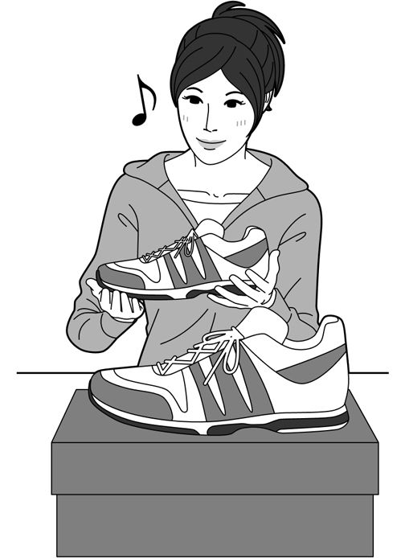
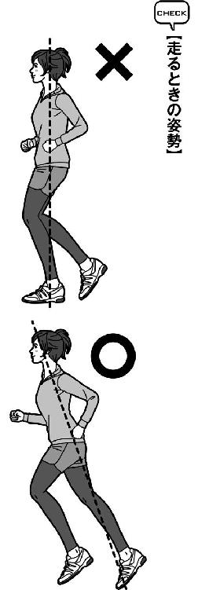
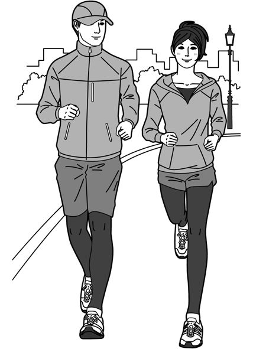
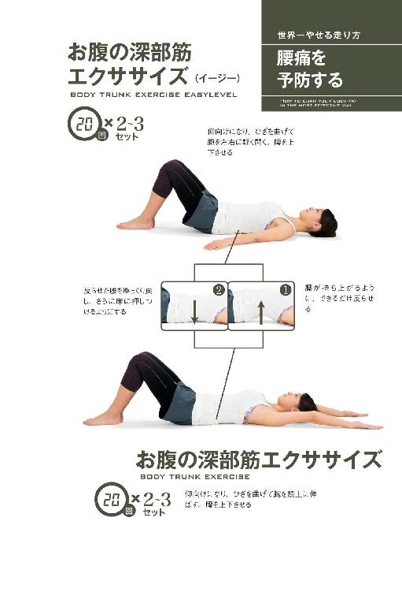
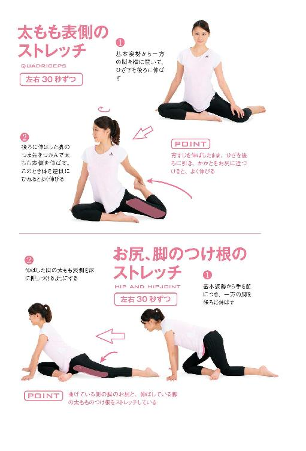
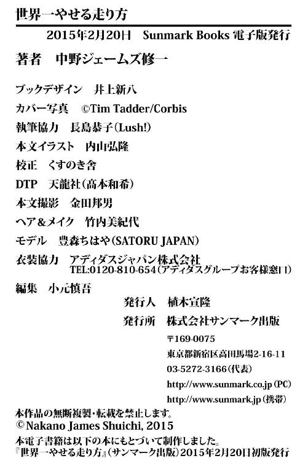

| 世界一やせる走り方 | |
| 中野 ジェームズ修一 | |
| (2015) | |
この本は縦書きでレイアウトされています。
また、ご覧になる機種により、表示の差が認められることがあります。
本電子書籍は、購入者個人の閲覧の目的のためにのみ、ファイルの閲覧が許諾されています。
私的利用の範囲を超える転載、配信、送信等の行為、並びに本作品の内容の複製、改変、改ざん等の行為は著作権法上、禁じられています。
はじめに
この本を手にされた、あなたの選択は大正解です。
そして、とてもうれしく思います。
なぜなら走る人は、ただ食事を減らす人よりも、つらい思いをして激しい運動に挑戦する人よりも、圧倒的にやせることに成功していくからです。
走ればやせる。
どんな走り方でも、続ければ体は変化する。
これは間違いない。
ですが多くの「やせたい」と願うランナーを見ていて「もったいないなぁ」「こうすれば、もっと効率的にやせるのに」とは、数えきれないほど思いました。それは大仰なものではなく、本当に少しの知識とちょっとしたコツなんです。
この本のタイトルは「世界一やせる走り方」ですが、私はマラソンの選手でもなければランニングの専門家でもありません。
体づくりの専門家です。
フィットネスの先進国・アメリカでトレーナーとしての経験を積み、以来20年以上、体と心を両面から支えるトレーナーとして、本当に数多くの方々を指導してきました。走り方はもちろん、スポーツ医学、運動生理学、心理学、栄養学など、あらゆる知識を用いて、そのクライアントに最適なエクササイズを提案しています。
クライアントには、体重が１００㎏を超える方から30㎏台の華奢な方、年齢が70歳を超える方から10代のお子さんまでいました。さらにオリンピックや箱根駅伝で活躍するようなトップアスリートもサポートし、多くの方に何かしらの貢献はできているのではないかと思います。
幸いなことに、期間内に必ず結果を出すことを要求される芸能人やモデル、経営者からの依頼も多数頂くようになりました。
そんな彼らの真剣な悩みにひとつずつ丁寧に答え、体を変えていく過程で得たものの一部を「世界一やせる走り方」として、ご紹介していきます。
......と、ストイックさを要求しそうなことばかり申し上げましたが、じつは私は昔、走るのが大嫌いでした。しかも在米中は、トレーナーなのに体重が90㎏を超えるほど太っていた時期もあります。今もスイーツが大好きで、いちばんの好物はタルト。出張に行けば、おいしいもの探しに余念のない食い道楽です。だからダイエットする人の気持ちは、痛いほどよくわかります。
「世界一やせる走り方」は、体の専門家でありながら、食い道楽で走るのが嫌いだった私が、ある意味自分のために編み出したものでもあるのです。
「世界一やせる走り方」には、３つのステージがあります。
まず〝一歩を踏み出す〟。
私は、やせたいと願うクライアントには、最も効果的な手段のひとつとして走ることを提案します。
なぜならいちばん手軽に、しかも確実に脂肪を燃焼できる運動だから。ですが「今日は走ってみませんか？」と声をかけると、１００人中１００人が「えーっ！イヤです、結構です!!」と即答します。はじめから「走るのが好きなので、本格的に始めたいんです！」とおっしゃった人は過去にいません。見事にゼロです。
こう聞くと「走るのは合わないかもしれない」と、少し不安になる人がいるかもしれません。でも合うか合わないかなんて、ある程度走ってみないとわからないもの。ちなみに先ほど申し上げたクライアントの多くは、走ることが楽しくなりハマっていきました。
次が〝習慣化する〟。
ランニングを１年継続できた人は４人に１人と言われるように、大多数の人が走ることを続けられません。運動習慣のない人には、特にハードルが高い。
ランニングを始めた人がリタイヤする理由は、さまざまです。
「一度走ってみてつらかった」
「仕事が忙しくて続かない」
「ひざや腰が痛む」
もし、こうした理由で走れなくなっていたとしても、決してあなたの根性や忍耐力が足りないからではありません。
走ることの習慣化には、必要なステップがあります。何よりもまず、あなたに最適なレベルから始めることが重要。これを間違えるから、うまくいかないのです。
そして〝今の体に脂肪を落とす刺激を与える〟。
定期的に走れるようになったとしても、自己流を貫いていて体脂肪を効率よく落とすために必要なことを知らずに過ごしてしまう方は大勢います。「こうすればやせる！」と真剣に考えて取り組んでいたことが、もしかしたら意味がないどころか体に負担がかかるだけ、というケースだってあるかもしれません。
もちろん走り慣れると体重も体脂肪率も変動がなくなってきますし、誰にでも停滞期は訪れます。それを打破するアイデアを、あらゆる方面から「やせスイッチ」「やせブースト」として紹介しました。
こうした情報の中から、今のあなたが取り入れられそうなものをひとつずつ試すうちに、今のあなたに最適な「世界一やせる走り方」が完成します。これを一度身につけさえすれば、あなたの体を生涯、支え続けてくれるでしょう。
本書が、くじけそうになったあなたを励まし、たくさんのお役立ち情報を提供して理想の体へと導く、いわばパーソナルトレーナーのような存在になることを期待しています。
〝速く走る〟ためでもなければ〝フルマラソンを完走する〟ためでもない、「世界一やせる走り方」を、私と一緒に始めましょう！
世界一やせる走り方
CONTENTS
How to burn your body fat in the most effective way
CHAPTER2
体脂肪がみるみる落ちる世界一やせる走り方とは
CHAPTER3
さらに効率よくやせるための「やせブースト」を教えます（体づくり編）
CHAPTER4
さらに効率よくやせるための「やせブースト」を教えます（食事編）
「走ってみたいけど、絶対に１００メートルすらもたない」
「運動オンチからすると、走るのは相当ハードルが高い」
このようなことをおっしゃる人の、なんと多いことか。こう言われたら私はすかさず「ダマされたと思って、ちょっとだけ走ってみませんか」と問いかけるようにしています。なぜならランニングは、学生時代に体育の授業で落ちこぼれだった人、いわゆる〝運動神経の鈍い人〟ほど、驚くほどハマっていくからです。
「またまた、そんな調子のいいことを〜」
と、いぶかしく思われるでしょう。
でも事実、ダイエットや健康維持のために走り始めた人が、すっかりマラソンの虜になったという話はめずらしくありません。私のクライアントにも大勢いて、なかには50代から走り始めて１００㎞マラソンにチャレンジするようになった女性もいます。
そして本書に紹介する「世界一やせる走り方」は、優れた運動神経もスポーツの経験も不要。くわしくは後ほどご紹介しますが、脂肪をたっぷり燃やすには〝ゆっくり走る〟のが最も効果的で、それは歩くのと同じくらい誰もが簡単にマスターできる動作だからです。
水泳やテニス、スキーといったスポーツをうまくこなすには、ある程度のスキルが必要です。チャレンジしてはみたものの「ああ、やっぱり自分には無理！」と、１時間も経たずに挫折する人だってたくさんいます。
これが〝ゆっくり走る〟なら、どうでしょう。どんなに「運動神経が鈍い」と言われ続けた人でも、思い立ったその日から始められますよね。
さらに、週単位で成果を実感できるのも素晴らしいところ。１回走るごとに心肺機能が上がるため、いつの間にか持久力がつきます。先週よりも今週、今週よりも来週のほうが、息が上がらなくなったり足がラクに前に出たりと、週単位で自分のレベルアップを体感できるんです。
でも、たとえばゴルフやテニスだと、どんなに練習した翌週でも、さほどうまくはならない。それこそ４〜５年経ってやっと上達を実感できる人だっています。運動が苦手な人なら、もっとかかるかもしれません。これでは、やる気も続かないですよね。
スポーツにいい思い出がなかった人ほど、走ることで得られる体や心に起きる劇的な変化にハマっていくようです。そういえば増田明美さんや尾崎好美さんといったマラソンの元オリンピック選手たちも「じつはランニング以外のスポーツは本当に苦手なの」とおっしゃっていましたよ。
持久力も筋力もカロリー消費量も、走れば走っただけ、ぐんぐん伸びていきます。
チャレンジする前に諦めず、まず一歩を踏み出しましょう！
意外とできてしまう自分に、驚くと思いますよ。
運動すればやせられる。そんなことは百も承知。
でも、重たい体を揺らして走ってもどうせ続きはしないし、「あの人、やせたいんだな」などとジロジロ見られるのも恥ずかしい......。そんな不安や気恥ずかしさから、最初の一歩を踏み出せない人は大勢います。
「......少しやせてから走ろう」
こう思い直して、これまでずっとやせるチャンスを逃し続けてきたんですよね。
せっかく今やる気になったのに、先延ばししたら一生その体のまま。どうしても自信がないのなら、外出時に少し速く歩いてみるのはいかがでしょう。
私たち運動指導者は、明らかに体重オーバーのクライアントに対して、いきなり「では、頑張って走ってやせましょう！」とは絶対に言いません。なぜなら運動習慣のない人が体重オーバーのまま走ると、ケガや障害という、やせるうえでの大きなリスクを背負うことになるからです。
走る動作には、地面から両足が離れる瞬間があります。そして片足が着地するときにかかるウエイトは、体重の約３倍。体重が60㎏なら１８０㎏、１００㎏ならば３００㎏もの衝撃です。それに耐えるだけの筋肉がないまま走り始めると、ひざや足首、足の裏、あるいは腰に大きなストレスがかかり、あっという間に痛めかねません。これでは、やせるどころの話ではなくなります。
オーバーウエイトの人、運動習慣のない人には、まず〝走れる体づくり〟をお勧めしています。その最適な方法が、ウォーキングです。
「ウォーキングなんて、お年寄りのするものでしょ。かっこ悪いなぁ」と思う人もいるでしょう。
じつはエリートランナーと呼ばれるマラソンの選手たちも、本格的に走り始める前やケガからの復帰直後は、基礎的な筋力・体力づくりのためにウォーキングから始めます。また、一般の人にとっては通勤や通学、休日の移動手段に組み込む、いつもより遠くまで散策するなど、日常生活に取り入れやすいのが大きな魅力。
これだけでも、毎日の積み重ねでカロリー消費量は跳ね上がります。２週間も続ければ体重に変化があらわれる人も。
また、ウォーキングは速く歩けば歩くほど、エネルギー消費量が増えます。きびきびとした動作のウォーキングを続ければ、体脂肪が確実に減る。その結果、体重が減り、いつの間にか走りやすい体形も手に入る、というわけです。オーバーウエイトの人は、まずは〝きびきびウォーキング〟から始めてみてください。
だらだらゆっくり歩くだけでは、効果はあまり期待できません。ポイントは、軽く息が上がる程度のスピードできびきびと歩くこと。意識して徐々に歩幅を広げていくとうまくいきます。歩幅が広がると、お尻や太ももにある大きな筋肉も自然と使われます。すると呼吸が深くなり、肺はたくさんの酸素を取り込んで、多量の血液が心臓から下半身に送られるように。いつの間にか心肺機能が鍛えられますし、下半身の筋力だけでなく持久力のアップにも非常に有効です。
「筋力や持久力がつくと何かいいことあるの？ 私はやせたいんだけど」と思う人もいるでしょうが、あなどってはいけません！ この２つがつけば、当然疲れにくくなります。すると何をするのも億劫だった人すら知らず知らず活動的になり、日常生活でもマメに体を動かすように。その結果、１日の消費カロリーもいつの間にか増えるので、体が引き締まってくるのです。
体重のある人が最も心配なひざまわりを手っ取り早く強化するなら、階段を使うことの習慣づけがおすすめです。階段の上り下りをすると、走るときと同じように片足で全身を支える瞬間がありますが、ひざ関節にかかる負荷は体重の1.3〜1.6倍と半減。過度の負荷をかけず、確実にひざ関節を守るための筋力を強化できます。そしてウォーキング以上に脚力と心肺機能が鍛えられるのです。
 エスカレーターを遠ざけただけでも体は変わる
エスカレーターを遠ざけただけでも体は変わる
駅や歩道橋、あるいは勤め先や自宅のマンションで、エスカレーターやエレベーターを避けて意識して階段を使うだけなので「ウォーキングのための時間なんてない！」という忙しい人にも、うってつけでしょう。上りは太ももの表側にある大腿四頭筋、下りは太ももの裏側のハムストリングスと、おもに使われる筋肉が替わるため、上り下りのどちらかに偏らせないのもポイントです。
「太っているからやせたい。だけど走れる自信がない......」
私としては、こういう人にこそ本書を手にして走る気持ちよさを体感してほしいと思います。諦める前に、まずは１日10分の〝きびきびウォーキング〟を。その中で体が変わり、気持ちも前向きになっていくことを感じましょう。
走ると決めたら「思い立ったが吉日！」とばかりに突然ガンガン走る人も、じつは意外と多いんです。でも数回走っただけでひざや足首が痛み「本当に走って平気かな......」と不安になるとしたら、せっかく高まったモチベーションも急降下。ウォーキングなどで少し鍛えていたとしても、運動習慣のない人が初めて走ったときに脚に感じる衝撃は過去にないものかもしれません。
「少々痛くてもガマンできる」と痛みを抱えたまま走っても、走る距離や時間は延ばせないため、消費カロリーは増やせません。効率よくやせるためにも、走れる体づくりは重要です。
ある程度の距離や時間を走れるだけの筋力が最低限、備わっているかどうかを知るために、簡単なテストをしてみましょう。
【立ち上がりテスト】
イスに浅く腰掛け、胸の前で腕をクロスさせる。左脚を前に伸ばし、反動を使わずに右脚だけでゆっくり立ち上がる。もう一方の脚も同様に行う。
イスの高さは20代の男性は20㎝、女性は30㎝、30代の男性は30㎝、女性は40㎝。40代〜60代は男女ともに40㎝が基準。イスが低いほど強度は高い。
このテストをしたら、次の２つで判断します。
①両足ともバランスを崩さずに「立ち上がりテスト」ができる
②片足立ちでも、体の軸をぶらさずスムーズに靴下を履ける
これをクリアできれば走ってもＯＫ。ただし、あくまで最低限なので、日常生活での〝きびきびウォーキング〟や積極的な階段の上り下りは続けましょう。これで走る距離や時間を少しずつ延ばしていけば、いいペースで脚力がつきます。
余裕ができたら、ひざ痛予防の筋トレ（APENDIXの「ひざの痛みを予防する」の項参照）を取り入れても。「筋トレは面倒だし、苦手だなぁ」という人は、エアチェア（APENDIXの「ひざに負担をかけず走れる脚をつくる トレーニングⅠ」の項参照）だけでもお試しください。この筋トレは、同じポーズをキープすることで負荷をかけるのが特徴。「ジッとしているだけで効果があるの？」と思うかもしれませんが、普段使っていない筋肉が目覚めて、効果的に脚力をつけられるのです。
私たちの体は、本来ある筋力の60〜70％程度で活動しています。この筋トレは筋力を出し続けるため、長く続けるほど筋肉は疲弊していきます。すると、これまで眠っていた筋肉が「僕たちも稼働しなければ間に合わないぞ！」と次々と目覚め、多くの筋肉が活性化するのです。
怠けていた筋肉に刺激を与えるだけで、脚力がアップ。頼りなかったひざまわりも、より安定します。ただし呼吸を止めると血圧も上がるので、止めないように意識してくださいね。
いざ走り始めても、すぐに疲れてしまう場合、２つの対策が考えられます。呼吸は苦しくないのに脚が前に出ない人は、筋持久力を鍛える筋力トレーニングが有効。脚は大丈夫でも呼吸がゼェゼェいって息が上がる人は、緩急をつけて走るインターバルトレーニングで心肺機能を鍛えましょう！
......と言いたいところですが、今は走るだけで精いっぱいですよね。
「筋トレやインターバルトレーニングは、面倒だし億劫」「そんなこと難しくてできないよ」という人のほうが多いでしょう。
ではどうするのか？
答えは簡単。激しい疲れを感じない程度までスピードを落とせばいいのです。
途中から歩くのもいいし、歩く、走る、を数分ずつ繰り返してもいい。速く走って「目標距離を完走できないから」と途中でやめるより、走りきれるスピードで目標の距離を完走したほうが、確実に多くの脂肪を燃やせます。
週２〜３回のペースで走り始めると、２週間もあれば体は変わります。
こう言うと「ええー、体重も体脂肪率も変わってないし！」「むしろ増えてしまったよ......」という抗議の声が聞こえてきそうですが、プロのトレーナーとして断言しましょう。
じつは２週間で確実に〝体をやせさせるスイッチ〟は入るのです。
「１か月で５㎏やせたい」などと思っていると、どうしても体重や体脂肪率の日々の変動にばかり目が行きがちです。でも自分の体を、よーく見つめ直してください。何か変化を感じませんか。
顔色がよくなった、階段で息切れしなくなった、走るときにラクに足が前に出るようになった、......こうした変化を実感し始める目安が２週間程度です。
これらは決して気のせいではありません。走るたびに血行が改善されて心肺機能が向上した成果であり、ここまで続けられたことへのご褒美です。
心肺機能とは、酸素を取り込む肺の機能と血液を全身に送り出す心臓の機能のこと。脂肪を燃焼させるには酸素が必要で、しっかり体に取り込めれば脂肪を効率的にエネルギーにしてくれます。すると脂肪の消費量がアップ。つまり心肺機能の向上は、効率よく脂肪を燃焼させるスイッチが入った証なのです。
２週間、体重に変化がないから「やっぱり自分はやせられないじゃないか！」と投げ出すとしたら本当にもったいない。あなたの体についた脂肪は、何年もかけて積み重ねた食生活や運動習慣によってできた結晶です。それがたった２週間で燃焼モードに切り替わるなんて、ものすごい変化だと思いませんか？
心肺機能を測る目安のひとつに最大酸素摂取量（VO2max）があります。これは体重１㎏に対し、筋肉が１分間にどれだけ多くの酸素を取り込めるかを数値化したもの。設備の整ったスポーツクラブを使える人は、走り始める前にランニングマシンの体力測定モードで数値を確認しておくといいでしょう。
※最大酸素摂取量の数値はトレーニングにより最大で約20％上がる。ちなみに一般の人の数値は30〜50ミリリットル／㎏／分。オリンピック出場クラスのマラソンの選手は80ミリリットル／㎏／分程度は必要と言われている
定期的に測定すると、目に見えて数値が変化します。こうした変化を実感することも、モチベーションアップにつながりますよ。
スピードを上げて走るとフォームがダイナミックになり、全身の筋肉も総動員。心臓はフル回転して血液を全身にギュンギュン巡らせ、汗も噴き出します。
「やっぱり、たらたら走るより速く走ったほうが、短時間でたくさんカロリーを消費できる気がするんですよね〜」
これは運動経験のある人から、よく耳にするセリフです。気持ちとしては「よく頑張っていますね！」と手放しで褒め称えたいところですが、残念ながら「世界一やせる走り方」からは完全に逸脱しています。
それはなぜでしょう。
目的がマラソンでの自己ベスト更新なら、速く走るトレーニングも有効です。でも体に溜まった脂肪を効率よく燃焼させたいなら、息切れするほど速く走るのは逆効果。ある程度ラクに走ったときのほうが、脂肪が優先的に消費されるからです。
前述のように、体脂肪をエネルギー源に変えるには酸素が必要。運動をすると体内の脂質は、まず脂肪細胞内で分解されて筋肉に運ばれます。さらに筋肉の細胞内で酸素を使ってエネルギーに変換され、燃焼されていく（＝有酸素運動）のです。
ところが運動が激しくなると、燃焼にこんな手間のかかる脂肪ではなく、手っ取り早くエネルギーになる糖を使います（＝無酸素運動）。ゆっくり走れば体の中にある糖質と脂質の使われる割合は五分五分程度なのに、いわゆる〝ダッシュ〟などをすると脂質の使われる率はなんと10％程度にまで激減。これが「無酸素運動より有酸素運動のほうが体脂肪は燃える」と言われる理由です。
それに、よく考えてください。息が上がるほど速く走ったら、すぐに疲れて長く走れませんよね？ 走る距離や時間を長くするほど多くの脂肪を消費できるんですから、短時間でバテたら高い効果は望めません。
ゼェゼェハァハァと全力で走ったのに脂肪はたいして減らず、「やっぱり走るのはキツい」「自分には無理」というネガティブイメージは増える一方。これでは、せっかく走っても損ばかりです。肉体的な疲労感だけでは〝やせる〟につながりません。うさぎとカメではないけれど、無理しないのが成功の秘訣なんです。
「月１回、走るだけで、モデル体形になれる方法はないですか？」
最近受けた質問です。
さすがに、しばし返答に困りました。
「う〜ん、走っても脚の長さは変わりませんからね......。まぁ顔の脂肪が落ちて多少、小顔になるかもしれませんが、それも月イチでは難しいでしょう」
「......そうですかぁ。では週イチでは？」
「週イチでも、何もやらないよりはいいと思いますが......。できれば２〜３日、早歩きのウォーキングを組み合わせられるといいですね」
「あ、いいですね。それなら続けられそうです！ じつは走ると脚が太くなるって聞くので、あまり回数を増やしたくないんです」
これにはびっくりしました。
時間がない、体力が続かないから難しいのかなと思ったら〝脚が太くなる〟のが定期的に走りたくない理由だというのです。
女性誌の取材を受けていると、よく「ムキムキの筋肉になりたくないから、女性は激しい筋力トレーニングをしない」という話になります。
断言しましょう。
男性ホルモンの注射でも打っていないかぎり、女性が一般的な筋トレで筋肉ムキムキになるなんてありえません！ 特定部位の筋線維を太くすることに特化した筋トレですら、女性の体を筋肥大させるのは難しいんです。走ることで目に見えて脚が太くなるようなことはありません。
もし、これまでに「走ったら脚が太くなった」と感じたのであれば、理由は次の２つが考えられます。
①皮下脂肪が落ちないまま、筋肉がついた
走る回数や距離が増えても、食べる量まで増えたら脂肪の燃焼が追いつきません。「走っているから」と安心して、以前より食べ過ぎていませんか？
②走った直後、脚が〝パンプアップ〟している
走った直後のふくらはぎを見て「太くなった」と勘違いしていませんか？
筋肉を動かすと、その部位にエネルギーの素を運ぶ血液が集まります。すると一時的にですが、水ぶくれしたようにパンパンに張る〝パンプアップ〟という現象が起きます。これは体を激しく動かした直後だから生じた現象なので、ご安心を。すぐ元に戻りますよ。
分厚い脂肪で脚を覆い尽くすか、筋肉で引き締めるか
そもそも「走ると脚が太くなる」という思い違いこそが、脚を太くする原因です。全身の筋肉の約７割を占める下半身を使う運動をしなければ、筋肉はやせ細るばかり。脚の筋肉が少ないとレッグラインは脂肪でしっかりコーティングされ、ぷよぷよとたるむことになります。しかも疲れやすくなるため、すぐ座りたくなる、長時間歩けないなどして活動量は減り続け、カロリーを消費しにくい省エネ体質になる一方。
電気の消費量を減らす省エネなら家計は助かりますが、体についた脂肪の消費量が減る省エネなんて、うれしくないですよね。
また、よく知られているように、ふくらはぎは〝第二の心臓〟と呼ばれています。なぜなら足まで下りた血液を再び心臓へと戻す、ミルキングアクションとも呼ばれる役割を担っているからです。ところが、ふくらはぎの筋肉が少ないと、古くなった血液や老廃物が滞留しやすくなります。これが〝むくみ〟につながり、太くなったように見える一因に。さらに冷えも誘発し、ますますエネルギーを消費しにくい体質になるでしょう。
脚の筋肉が少ない人ほど消費カロリーも少ないため、少し食べ過ぎただけで太ってしまいがち。だから、せっかく脂肪を落としたとしても元の体形に戻りやすいのです。これでは永遠に、やせないループから卒業できません。
脚を引き締めたいなら、走りましょう！
ちなみに便秘がちで下腹ポッコリが気になる女性は、走ることのメリットをいち早く実感できます。走ったときの振動で腸が動き、あっという間に便秘が改善したという声が、とても多いのです。
やせるために走ってみたクライアントに「本格的に走ってみませんか？」と提案すると、よく耳にするのが、
「走ってもいいけど、食事を減らすのは無理！」
「走った後のビールはたまらないし、走ったらご飯がおいしくなって、よけいにやせられないと思います」
という意見。
そうですよね。
実際、食事量をグッと減らすだけのダイエットは長続きしません。
でも、これが意志とは関係ない欲求だったらどうでしょう。
あなたが必要以上に食べて、飲んで、太ってしまう原因は、じつは食欲を司る〝脳〟の誤作動かもしれません。
脳の視床下部には、体を最適な状態にセッティングするための機能が備わっています。食欲も、視床下部の摂食中枢と満腹中枢のはたらきが深く関わり、ここでコントロールされているのです。
たとえば体を動かすと、血液に含まれる糖がエネルギーとして使われ血糖値が下がります。と同時にエネルギーを脂肪として蓄積するためにはたらくホルモン、インスリンの濃度が低下。すると体についた筋肉や脂肪が分解され、不足したエネルギーを補います。
こうして血中の脂肪酸が増えると、摂食中枢から「お腹が空いた！」というシグナルが生じ食欲が湧きます。そこで食事をすると血糖値とインスリンの濃度が上がり、満腹中枢が作動。「お腹がいっぱいだ！」と感じるため、食欲は収まります。ところが生活習慣や食生活が乱れると、しだいに摂食中枢や満腹中枢が誤作動を起こすように。こうして満腹感を得られなくなった人は必要以上に食べる（＝オーバーカロリー）状態に陥ってしまうのです。
この誤作動を本来の状態に戻すには〝自分の食欲を一度、疑ってみる〟のが効果的。「今、本当にお腹が空いているのか？」「おいしく食べられているか？」を頭の中で反芻すると〝ニセ食欲〟が消えやすいのです。
たとえば〝走った後のビール〟という習慣に流されていないか？
走った後にグラス１杯なら体中に染み渡るほどおいしいけれど、ジョッキ１杯は多くないか？ 太ったとしてもやめられないほどおいしいと思い込んでいないか？
私のクライアントを見ていても、最初は「走った後のビールがやめられない」と言っていた人も「せっかく走ったのにジョッキ１杯飲んだら意味ないでしょう？ やっぱり労力を無駄にしたくないんだよね」と考え方が変わっていきます。
だんだんビールの量が減ったり、油っこいおつまみを枝豆やししゃも、豆腐に替えたり。食べる量が減るのではなく、自分の中で〝走った努力〟と〝食欲〟の収支を計算し、自然と適正な量と内容を考えられるようになるのです。
「そうは言っても飲めないのは、さすがに厳しいなぁ」
こう思った人、いらっしゃいますよね。ご安心ください。
もちろん完全にビールをやめる必要なんて、ありません。
ガマンするのではなく、まず何も考えず口にものを放り込む習慣をなくすことが大事。１回考えてみて、それでも「今日はジョッキで！」「ラーメンで！」となったら、もちろん飲んで食べればいいんです！
そのときは脳の誤作動ではなく、体が必要としているんですから。
歩くだけでも汗ばむような季節でも、長袖にロングパンツという出で立ちで走る女性をよく見かけます。顔を真っ赤にして汗だくで走る彼女たちと、すれ違うたび可哀想になり「そんなに厚着で走っても、やせませんよ！」と声を掛けたくてウズウズしてしまいます。あなたは、こんなことしていないですよね。
結論から申し上げると、発汗量と脂肪燃焼率はまったく比例しません。
さまざまな場面で質問されるたびに、私は「たくさん汗をかいてもやせません」「サウナスーツを着ても脂肪燃焼効率は上がりません」と答え続けてきました。何年経っても払拭されない〝汗とダイエット〟の誤解について、ご説明しましょう。
発汗は、体内にこもった熱を放出し、適正な体温を保つために起こります。決して、体内で脂肪がガンガン燃えているから汗をかくのではありません。もちろん汗が出て体重が減っても、やせたわけではない。〝やせる〟とは脂肪を燃焼し消費することで、一時的に水分が抜けることではないのです。
そもそも走りながら意図的に汗をかこうとすると、体に強い負荷がかかって脂肪を燃焼・消費する効率は下がってしまいます。たとえばサウナスーツを着込む、サウナやホットヨガの直後に走る、さらにカイロをたくさん貼ったりビニールラップを全身に巻いたりする人までいますが、どれをやっても、ただただ苦しい思いをするだけ。やせる効果は得られません。
......という話をすると「でもボクサーはサウナスーツを着ているじゃない。あれはやせるためにやっているんでしょ？」と反論されます。
ボクサーは、まず筋肉をつけてパワーを上げます。そして計量日までに、できるだけそのパワーを維持しつつ規定のウエイトまで体重を削り落とします。ですから髪の毛でも爪でも、それこそつばを吐いてでも落とす。苛烈なトレーニングもするから脂肪も多少は落ちますが、落ちた重量のほとんどは水分なのです。
彼らが限界まで汗を絞り出すのは、厳しい試合を乗りきるために心と体を鍛える意味もあるのかもしれませんね。
「走るついでにボディメイクできたらいいなぁと思って、履くだけでヒップアップ効果があるとウワサのウォーキングシューズ、買っちゃいました〜」
とは、大手コンサルティング会社で多忙な日々を送る40代の女性。その気持ちは、とてもよくわかります。息つく間もなく忙しい中で時間をやりくりしてまで走るなら、一石二鳥の効果を狙いたいですよね。
でも残念ながら「世界一やせる走り方」からは何歩も遠ざかります。同じ理由で「走れればどんな運動靴でも一緒でしょ」と、玄関にあった適当なスニーカーで走っている人も、今日からやめてください。
それはなぜか。
ウォーキングシューズは歩くため、お洒落スニーカーはファッションのためにつくられたもので、走り続けるのに適した構造を持たないからです。サッカーの試合で「同じ運動靴だから大丈夫！」と登山靴でプレーするツワモノはいませんよね。
ゴルフやアイススケートなどのシューズと同様、ランニングシューズには走るのに適したさまざまな機能が搭載されています。たとえば靴底（ソール）には、着地の激しい衝撃を吸収・利用して次の一歩をラクに踏み出せる素材を採用しています。
走るのに適さないシューズで走り続ければ当然、筋肉や関節に余計な負荷がかかり、フォームが崩れたり筋肉に違和感を生じたりします。それでもガマンして走り続けたら、激しい部分疲労やケガにつながり、やせるどころか走れなくなる、あるいは走るのがイヤにすらなるでしょう。
機能の充実したランニングシューズの相場は、１万円強。「たかだか走るだけなのに高い買いものだなぁ」と思うかもしれません。でもシューズは年々、素晴らしく進化し、快適で走りやすくなっています。本当に〝羽が生えたよう〟に軽々と前に進める気持ちよさに、ビックリすると思いますよ。
しかもデザインまでカッコいい。お気に入りのシューズに足を入れると、それだけでやる気が出ます。やる気が出れば、走る距離も消費カロリーもいつの間にかアップする。これ以上にお得なダイエットグッズはないと思いませんか？
「コツコツ続けるのは苦手。むしろ週２日程度、体力の限界まで走ったほうが一気に消費カロリーが増えて、効率がいいと思うんです」
本書の取材のためにリサーチした男性から寄せられたコメントです。「週２日でやせられるなら限界まで走っても」とのことですが、〝限界〟と言っている時点で、かなり無理があります。毎回、限界まで追い込んでいたら、習慣化のハードルはかなり高い。結局はイベント的に〝月に数日〟程度しか走れず、月間の消費カロリーはたいして上がらないのがオチです。
これまで多くのクライアントに接してきましたが、傾向として「もうちょっと走りたい」と感じたところで終わりにする人のほうが習慣化できています。腹八分目でスッパリやめると心身に残る疲労が比較的少なく「気持ちよかった〜！」というよいイメージのまま終了。これが次の日も走ろうという意欲につながるからです。
何度も言いますが、どんなにハードに走っても一朝一夕ではやせられません。それよりも、苦しさを感じない程度にゆっくり走って「また走りたい」「もっと走りたい」というモチベーションを維持したほうが「世界一やせる走り方」の成功率は圧倒的に高まります。
もちろん性格によって例外もあるでしょう。「限界まで走らないと納得いかない」「中途半端で気持ち悪い」と感じる人もいます。ちょっと変に思う人もいらっしゃるかもしれませんが、私も吐く手前まで追い込んだほうが１日を気持ちよく終えられるタイプです。これは達成感重視の人に多いかもしれません。
そういう人は、たとえば時間のある週末などに、納得できるまで長時間走るのもいいでしょう。ただし 〝軽く息がはずむ程度〟のゆっくりペースをキープすべき。息が上がり過ぎると長い距離を走れないですし、脂肪燃焼効率だって下がります。せっかく走っても、苦しいばかりで消費カロリーが少ないなんて、もったいないですよ。
「何度か走ってみて結構イケると思い、一気に距離を延ばしたら痛みが......」
これは学生時代に運動部に所属していた人から、よく聞くケース。アスファルトや石畳といった硬い路面を走るのが怖くなる人も多いようです。
いちばん心配されるのは、やはりひざ。実際、ランナーズニー（腸脛靭帯炎）を筆頭に、ランニングで最も障害を起こしやすい部位です。
ひざ関節は、太ももの骨とすねの骨を靭帯でつなぎ合わせ、さらに動いたときもひざが安定するよう太ももの大きな筋肉がサポートしています。太ももの筋肉が衰えたまま走ればひざが不安定になり、負担が靭帯に集中。ときには靭帯だけでなく半月板などの軟骨組織にも影響し、障害を招くことすらあります。
ひざのほかに痛みを感じやすいのは足首や足の裏、かかと、そして腰です。足首や足の裏は末端で体重を支える部位なので、負担は当然大きい。かかとは、若いうちは脂肪層がクッションになるものの、加齢によって脂肪層が硬くなると着地での衝撃をダイレクトに受けて、痛みにつながります。腰は、腰まわりの筋肉が弱くなる以外にも、臀部の筋力や柔軟性の不足が原因の場合も、よくあります。
最大の予防策は、やはり下半身の筋力を養うこと。ひざに負担をかけず走れる脚をつくるトレーニングⅠ（APENDIXの「ひざに負担をかけず走れる脚をつくる トレーニングⅠ」の項参照）を試して、痛みがなければ続けましょう。運動習慣のまるでない人に走るための筋肉を充分につけるには、最低でも３か月はかかります。ケガや障害が不安な人は、日常生活でのきびきびウォーキングや階段の上り下りと並行し、少しずつ走る距離を延ばすのが得策。足りない筋力をサポートしてくれる初心者向けシューズも、障害予防に一役買いますよ。
走った後は、痛みを感じる部位を冷やしましょう。
また、疲労を残すと次に走ったときに痛みの原因となるので、ストレッチも有効です。ただし局所的に耐えられないほどの激しい痛みを感じる場合は、ケガのおそれも。自分で何とかしようとせず、すぐに病院へ行くべきです。
ケガをして動けなくなったら、元も子もありません。「たいした距離を走らないから」などという油断は禁物。やせ続けるには痛み予防やケアが不可欠なんです。
残念ながら筋肉は、20代を境に年々約１％の割合で減少します。年１％減っていく代わりに増えるのが脂肪。ザッと換算すると、何の運動もしないと年１㎏ずつ体重が増える計算になります。「何をやってもやせられない」「今さら体を鍛えても仕方がない」と諦めた時点で、このペースで10年、20年と脂肪は増え続けます。考えただけでも恐ろしいですね。でも、これが現実です。
筋肉量の低下は、加齢よりもむしろ日々の活動量の低下が大きく影響しています。歩数が減った、階段を使わない、運動をしなくなったなどして活動量が減ると、筋肉への刺激が不足して弱る一方。特に下半身の筋肉群はサイズが大きいため、日常的に強い負荷をかけないと筋力はどんどん衰えていきます。
さらに筋肉は、ホルモンの関係で50歳から急激に減ります。60代〜70代になると、筋肉量は一般に20代の約半分になってしまうのです。
その一方で、76歳〜78歳の女性たちが４か月間の筋トレをした結果、筋力を示す筋断面積の総量が７％増加した、という研究報告も。もちろん20代と比べたら、残念ながら筋肉がつくことをサポートする成長ホルモンの分泌は、はるかに衰えています。若いころと同じ期間で同じだけの筋力アップは、さすがに望めません。でもトレーニングを続ければ間違いなく鍛えられ、体は引き締まる。60代でも70代でも、筋肉は増えるし筋力も上がります！
加えて、もうひとつ朗報を。じつは筋肉は〝貯筋〟できます。一度、筋肉を増やすと体に記憶され、数年後に再び筋トレを始めれば、マッスルメモリー（筋肉の記憶）が甦り、筋力を取り戻せるのです。
私のもとで５年間、パーソナルトレーニングを続けていたＳさん（女性）は、ある日、乳がんが見つかり２年間運動をお休みしました。闘病生活を経て元気になったＳさんは「もう一度、トレーニングを始めたい」と再訪してくれたのです。
もちろんＳさんの体は筋肉がそげ落ちていて、鍛えていたころとはまるで別人。再びゼロからの体づくりとなりました。
年齢が50代に入ったこともあり「元の体になるにはまた５年、いやもっと時間がかかるのでは？」と心配していました。ところがなんと、わずか１年半で元の筋肉量まで戻ったのです。
これがマッスルメモリーと呼ばれる現象です。
筋肉は、トレーニングによって筋線維が傷つき修復されるなどして太くなります。トレーニングの強度を上げてさらに継続すると、ある一定のレベルを超えて筋肉が太くなるときに、筋線維に〝核〟が増えます。そしてトレーニングをやめた後も〝核〟は残るため、数年経ってもトレーニングで刺激を与えれば〝核〟を使って元の筋肉量に戻せる、ということです。
現在は動物実験でしか立証されていませんが、人間も10年は〝核〟が残るだろうと考えられています。つまり20代〜30代に運動していた人は、30代〜40代で再開すれば以前のレベルに近い筋肉量をラクに取り戻せる。40代の今スタートすれば、もし運動を休止したとしても、再開さえすれば運動を何もせずに過ごしているよりも、はるかに容易に筋力を取り戻す効果が期待できるのです。
「もう中年だから、走ってもやせられない」などと思い込んで、諦めないでください。私のクライアントには50代、60代もいるし、走れば走っただけ筋肉は鍛えられ、体は必ず引き締まっていきます！
スポーツジムや市民体育館のランニングマシンで走っている人でもないかぎり、天気や気候の変化は、ときに走る気さえも左右する高いハードルとなります。
悩ましいのが雨の日です。せっかく走ろうと決めていた日にポツポツと小雨が降り始めると、それだけで一気に気分が萎える人も多いのでは。寒さの厳しい冬の日なら、なおさらです。
これまで、たくさんのランナーに雨の日の対処法について問いかけてきましたが、「雨の日は、神様が休めと言っているんだよ」と、意外にも休む人が多数。シリアスランナーと呼ばれる上級者やスポーツ選手にも、そういう人は結構います。
一方で「冬でもないかぎり、雨が降ると心地いいから走る」という声もあります。考えてみれば、大人が雨の中を走り回る機会はむしろ貴重。最近は防水機能に優れたランニングウェアやキャップも手に入るので、小雨程度ならいっそ楽しむのもアリでしょう。湿度が高くなるから呼吸もラクになります。
私自身もよっぽどの土砂降りでなければ、走ってしまう派。夏なんて、大雨の中を走ると意外に気持ちがいいんです。
雨の日にかぎらず、四季を通して外を走る生活が習慣になると、引き締まった体とともに 〝健康〟というおまけもついてきます。どこへ行っても室温がエアコンでコントロールされている現代、温度変化の少ない環境で生活していると、体温調節の機能がどんどん弱まっていきます。でもスポーツを習慣にすれば汗腺がしっかりはたらくようになるため、体温調節がきちんとできる体に。温度変化に適応する能力が衰えないので、免疫力が高まり、結果的に風邪もひきにくくなります。
雨で走るのをお休みした日は、脚力を鍛え脂肪燃焼率を上げる効果のあるトレーニングⅠ（APENDIXの「ひざに負担をかけず走れる脚をつくる トレーニングⅠ」の項参照）や、じっくり全身のストレッチをする日に充てるのもいいでしょう。もちろん「今日は休日」と何もせず、のんびり過ごしてもＯＫ。
心身ともにリフレッシュできますよ。
ストレッチも、慣れないうちは時間がかかるし面倒ですよね。
それに、あれやこれやとやることが増えると継続するためのハードルが高くなり、走ることの習慣づけも難しくなります。
ですから「世界一やせる走り方」に、走る前のストレッチは不要。その時間を設けるくらいなら走りましょう。いきなり走るのが不安なら、少しでも脂肪燃焼の効率が上がるようにウォーキングでウォーミングアップ。腕をつけ根からしっかり振り、歩幅を広げながら５分程度きびきび歩きましょう。体が温まったら、その流れで少しずつスピードを上げて走り始めます。
多くの人は、学生時代に体育の授業などで「運動の前にストレッチでウォーミングアップを」と習ってきたかと思いますが、これがそもそも間違いです。
ここで言うストレッチとは、反動を使わずターゲットの部位をじっくり伸ばす静的ストレッチのこと。ウォーミングアップは文字どおり、運動のパフォーマンスが向上するよう血流をよくして体を温めるのが目的ですが、静的ストレッチでは筋肉は充分に温まりません。むしろ筋温が上がっていない運動前に行うと、筋肉や腱を無理やり引き伸ばして傷つけることになりかねないのです。
ストレッチをするなら、走った後。クールダウンに行うと関節の柔軟性が高まり、疲れが溜まりにくくなるので、翌日も「走ろう」という活力が湧きます。逆にストレッチをしないと関節の可動域が狭まるため、走るとひざや股関節、足首などに負担がかかりケガをしやすくなります。しかも疲れが蓄積すると、走るどころか体を動かすことさえ面倒になり、まさかの体脂肪が増える生活に......。
ストレッチは毎日、続けても体の負担にはなりません。
走らない日もケガの予防や疲労回復を兼ねて、筋肉が温まったお風呂あがりに取り入れるといいでしょう。やり方は基本のストレッチ以降を参考にしてください。何かをしながらでもできますし、続けるうちに目に見えて体がやわらかくなります。
何よりも、縮んだ体を伸ばすのが気持ちいいと感じられるようになりますよ。
走ると決めていたのに、サボってしまった──。
そんな日が続いても「やっぱり自分には運動は向いてない」「走ってやせるなんて無理だったんだ......」と、自分を責めたり諦めたりしないでください。
人間は誰しもサボるものです。どんなスゴい人でも一度や二度はあるでしょう。
「サボった＝自分にはできない」
こうやって自分に落第点をつけ、ネガティブに受け止めるから続かないのです。
サボったら、また始めればいい。続いたのが３日だったとしても問題ありません。ゼロだったのが３日も続いたんです。１週間後でも１か月後でも、「よし、もう一度、やってみよう！」という気分になったら再チャレンジすればいいんです。
毎日は続けられなくても、気づいたらやってみる。たとえ断続的でも走ることを永遠にやめてしまわないかぎり、体には何かしらプラスの効果が生じます。
諦める前に、続ける工夫をするのもいいでしょう。好きな音楽を聞きながら走る、行ったことのない道を探索するのも楽しい。ダイエットの記録アプリやラン専用の記録アプリを使う人も大勢いて、走るたびに記録されることが楽しくて習慣にできた、という声もよく耳にします。目標をつくるのもいいですね。５㎞や10㎞、１年後のフルマラソンを目標に、まず大会にエントリーするのも手です。
半年や１年続けたら、ある日突然やる気がなくなることもあります。
多忙になったり大会後の燃え尽き症候群だったり、何かほかに夢中になることができたり。きっかけはそれぞれですが、ずっとやる気が持続する人なんて、この世にいません。何度もフルマラソンに出場した人でさえ走りたくなくなることもあるし、トレーナーの私だって「走りたくないなぁ」と思う日はしょっちゅうです。
やる気のないときに「ダメだ」と落第点をつけるのはやめましょう！ サボって再開して、を繰り返せばいい。そして、いつかやる気が湧いたら走ればいい。
三日坊主？ いいじゃないですか！
三日坊主を何回でも繰り返せれば、大成功です。
「忙しいのに走れる脚をつくるとか、考えるのは面倒」
「ただ走るだけならできなくはないけど、やせるにはどうしたらいいの？」
もし、こう思っていただけたとしたら、私としては本当にうれしいかぎりです。
ここでは運動習慣のない人向けに、３か月のプランを立てました。週末休みに合わせた１週間メニューなので、ライフスタイルに合わせてアレンジしてください。
ウォーキングやジョギングのルートを決めるときは、なるべく信号の少ないコースにすると、気持ちも体も乗ったまま快調に走り続けられます。また、デコボコした道は、つまずいたり足をくじいたりする原因にも。なるべく整備された路面を選びましょう。気分や体調に合わせて、景色や距離の違うルートを用意しておくと〝飽き〟も回避できますよ。
【１か月目】
月曜 できるだけ階段を使う
火曜 早歩きウォーキング（20〜30分）
水曜 できるだけ階段を使う
木曜 早歩きウォーキング（20〜30分）
金曜 できるだけ階段を使う
土曜 早歩きウォーキング（20〜30分）
日曜 できるだけ階段を使う＆ゆっくり走る（５分）
１か月目は、できるだけ速いペースで歩く〝きびきびウォーキング〟が中心。日常生活に運動を組み込むことで習慣化し、心肺機能を鍛えます。また、階段を使う習慣も身につけ、下半身の筋力アップとスタミナづくりをします。
週末は１日、〝早歩き〟と〝小走り〟の境目のスピードで５分間走ります。目安は「これ以上、スピードを出して歩くのは難しいけれど小走りなら......」という速さ。続けて５分間走るのが難しい人は〝きびきびウォーキング〟をメインに「次の信号まで少し走ってみよう」「電柱２本ぶん走ってみよう」など少しずつ走ることを取り入れるといいでしょう。
１か月目は運動習慣を身につけることが最大の目的なので、毎回「気持ちよかった！」と思える程度で終えることが大切。「また歩こう」「また走ろう」というモチベーションが高まります。もの足りなければ、次のステップへ。
【２か月目】
月曜 階段を使う
火曜 早歩きウォーキング（30〜40分）
水曜 階段を使う
木曜 早歩きウォーキング（30〜40分）
金曜 階段を使う
土曜 ゆっくり走る（15分）
日曜 ゆっくり走る（15分）
２か月目は１回のウォーキングの時間、走る回数と時間を増やします。この本を手にする前から速く歩く習慣がついていた人は、ここから始めて結構です。階段の上り下りは１か月目と変わらず、こまめに取り入れます。通勤・通学コースの階段に脚が慣れたら、会社や自宅マンションでも階段を使用するなど、新たな刺激を加えると、より効果的です。
週末のジョギングは15分間。スピードは１か月目と同様、きびきび歩くより少し速い時速８㎞程度。距離に換算すると約２㎞走れます。「いきなり15分間を走るのはキツい」という人は、ウォーキング５分＋ジョギング（10分）から始めて、徐々にジョギングの時間を延ばしましょう。もの足りなければ、次のステップへ。
【３か月目】
月曜 休み
火曜 階段を使う
水曜 ジョギング（20分）
木曜 ウォーキング（45〜60分）
金曜 階段を使う
土曜 ジョギング（20分）
日曜 ジョギング（20分）
３か月目にはウォーキングや階段の上り下りの成果が如実にあらわれ、脚の筋肉がしっかりついてきます。走るのは週３日、各20分間。おそらく、このころには時速８㎞ではもの足りなくなり、8.5〜９㎞のスピードで心地よく走れるようになっているでしょう。時速９㎞で走れれば、20分で３㎞走れます。ここまで来れば運動経験のない人ではなく、もう立派なランナーですよ。
走っているうちに頭の中がスッキリしてきて、体ひとつでグイグイ前進する楽しさを味わえます。
走る回数も時間も増やしたので、週１日はしっかり体を休めましょう。走ることに慣れてきても、無理は禁物。体や心がポジティブに変化するのを楽しみながら取り組むのが「世界一やせる走り方」の基本スタンスですから。
ランニング講習会の参加者などに走り始めたきっかけを聞くと、最初から「フルマラソンを完走したい」などと答える人は、じつはかなりの少数派。「やせたい」「運動不足を解消したい」「健康を維持したい」が動機のトップ３です。
なぜ、走ろうと思ったのか？
これを明確にすることが、じつは「世界一やせる走り方」を成功させる重要な鍵を握っています。
本書を手にされた人は、おそらく「効率よくやせたい」が最大の動機ですよね。
では、あなたはなぜ、やせたいのですか？
どんな自分になりたいですか？
体脂肪、または体重をどれくらい落としたいですか？
それを、いつまでに成功させたいですか？
いったん本を置いて考えてみてください。
コンプレックスを解消したい、メタボ体型から脱出したい、モテたい。５㎏、いや10㎏体重を落としたい。結婚式までに、夏までにやせたい。体重を落とすより見た目を引き締めたい、やせなくていいけれどこれ以上太りたくない......。
あなたの動機が明確になったら、今この場でその思いを手帳や日記に書き留めましょう。書いたものがつねに視界に入るよう、壁に貼るのもいいですね。
ダイエットは一朝一夕では成功しません。「世界一やせる走り方」を成功させる第一の目標は、走ることを習慣にし、たとえ途切れ途切れでも続けること。最初の動機がぼんやりしていたり、初心を忘れたりすると「やめたいなぁ」と弱気になった瞬間、あっという間にサボりぐせや怠けぐせに打ち負かされるのです。
「やめたいなぁ」と思ったら、必ず最初の動機に立ち返りましょう。それを強く心に刻むことが、あなたに最適な「世界一やせる走り方」のスタートラインです！
なぜやせたいかを具体的に書き出す
走ると決めたら、まずランニング専用のシューズを購入しましょう。スポーツメーカーのショップや大きなスポーツ用品店に行けば、たくさんある中からあなた好みのものをじっくり選べます。
ランニングシューズには、運動習慣がない人でもケガのリスクが少なく、かつ快適に走るための機能が搭載されています。初めて履いた人は、スニーカーとは比べものにならないほど足運びが軽く、脚がグイグイ勝手に前に進むような感覚に驚くと思いますよ。ほかにも、つま先に行くほどソールが薄くなっていて蹴り出しやすい、かかとがホールドされていて左右にぶれないなど、いかに体に負担をかけずラクに走り続けられるかが考え抜かれているのです。
そして〝自分のベストシューズ〟を手に入れると、その快適な履き心地が走りたい気持ちを後押ししてくれます。今はさまざまなランニング雑誌やネットにもシューズ選びの情報があふれていますが、ベストシューズを選ぶうえでの最重要ポイントは何だと思いますか？
それは履いたときに「あ、足が包まれている！」と感じるかどうか。
〝包まれている感覚〟は、たとえるなら靴下を履いたときのフィット感です。難しいことは考えず、足を入れたときに「うーん、どうだろう？」と違和感が頭をよぎったら候補からはずしていい。なぜなら、包まれている感じのないシューズは足の形に合っていないからです。
ランニングシューズは、走力やランニング歴、足の形によって種類がかなり細かく分かれています。もし初めて買うなら、あまりにも種類が多いため目移りしてしまうかもしれません。そんなときはお店のスタッフに相談して、今のあなたに適したシューズをいくつか出してもらいましょう。
もちろん最終的には、履いたときの心地よさで決めるべきです。大切なのは、あなた自身の感覚。実際、長距離走で世界トップクラスの選手も、そして箱根駅伝の選手たちも「履き心地がいい」という理由で、初、中級者用のシューズを愛用している人は結構いるんです。
そのほかに気をつけたいポイントは、次のとおりです。
①重さだけで選ばない
「私は脚力がないから、軽い靴のほうがいい」
これが、初心者に最もありがちな靴選びの勘違いです。最近では初心者向けにつくられた軽い靴も出ていますが、上級者用のものと比べるとやや重いものが多い。その理由は、長時間走るための筋力がついていない足腰を、保護し動作をサポートする機能が搭載されているから。たとえば少ない力を前進するために変換する機能、クッション性や着地時の安定性を高める機能などが代表的です。
脚力が弱いといっても、人間の両脚の発する力は非常に大きい。１００㎏あるタンスでも、両足の裏で押せば女性でも動かせるほどです。にもかかわらず数十グラム重い靴だからと心配する。大丈夫、その程度で走るときに脚が上がらなくなるなんて、ありえません。
重さのみにこだわるのはナンセンス。多少、重いと感じても、ケガなく快適に走り続けるための機能を重視してください。
②メーカーにこだわらず数多く試す
シューズを選ぶうえでマストなのが試し履き。これをしないで文字情報や見た目の好みで選び、インターネット上にあるショップなどで購入するのだけは絶対にやめてください。
シューズの足型はメーカーによって異なります。もっと言えば同じメーカーでもモデルによって異なります。フィットするものが見つかれば、２足目以降は同じモデルを購入すればいい。もちろん走ることで、足の甲や裏の筋肉は鍛えられます。それによって、足のアーチが高くなったり筋肉によって厚みが増したりして形は変化するため、念のため試着は必要です。
私は、自分がアドバイザリースタッフを務めるメーカーのシューズを愛用していますが、やはりモデルによって合う、合わないがあります。そして、足型の合うモデルの新作が出るたびにアップデートしています。
足に合うシューズが見つかると、走りが快適になるだけでなく爪の内出血（爪下血腫）なども予防できます。ショップによっては、サイズを詳細まで割り出す測定機があり、備えつけのランニングマシンで走ったときのフォームから靴を提案してくれるところも。試せることは、すべて試しましょう。
③機能は劣化するので買い替える
ランニングシューズのソールは、おもにゴム素材でできているため劣化します。劣化とともに機能が低下し、これがケガや障害の要因にもなるため、買い替えが必要です。
目安は、走行距離８００〜１０００㎞。また、ゴムは経年劣化するので、あまり履いていなくても２〜３年経ったら新しいものを購入してください。
ちなみにアディダスでは近年、画期的なソール素材を採用しました。BOOSTTMというミッドソールですが、これが、じつにすばらしい！ １０００㎞走ってもほぼ劣化せず、気候による硬度の変化もありません。
年々、驚くほど進化するランニングシューズ。数年後には、こうした新技術がスタンダードになるかもしれませんね。
マイベストシューズを更新していく

マイベストシューズを入手したら、ウェアも気になるところです。
ウェア選びでは、何よりも脂肪燃焼効率を考えるといいでしょう。
体脂肪は、体温が１℃程度上昇したときに最も効率よく燃焼すると言われています。なぜなら脂肪を燃焼させる酵素、リパーゼはこの温度で最も効率よくはたらくから。これより体温が下がっても、上がり過ぎてもリパーゼのはたらきは悪くなり、脂肪燃焼効果は下がります。
たとえば厚着して走って体温が上がり多量に汗をかくと、体は脱水状態に陥ります。すると体から脂肪を燃焼するためのエネルギーが奪われるのです。多量に汗をかくと体内の水分が必要以上に奪われるため、血液の水分量が減ります。これによって血圧が下がり、胃や脳の血流が低下。めまいや頭痛、集中力の低下などを引き起こす原因にもなります。こんな無茶は長くは続きませんから、せっかく立てた計画も頓挫するのは目に見えています。
では、どんなウェアで走ればいいのでしょう。
第一に、体温を上げ過ぎないこと。熱のこもるサウナスーツなどではなく、熱をうまく放出してくれる機能が必要です。第二に、吸汗速乾性に優れた素材であること。汗に濡れたウェアが肌につくと体温を奪い、リパーゼのはたらきも低下します。たとえば汗を吸って重くなるような綿のＴシャツやパンツは、動きやすさの点からもおすすめできません。ペタッと貼りつくと気持ち悪いですよね。
最近はさまざまなブランドからカラフルでお洒落、しかも高機能のランニングウェアが多数リリースされています。吸汗速乾性に優れた素材なので、重ね着をしても快適。気になる二の腕やお腹のラインだって、スタイリング次第で隠せます。着圧のあるコンプレッションタイプのウェアなら、お腹や太ももの揺れが抑えられ気持ちよく走れるでしょう。
このコンプレッションウェアは近年、ランナーのあいだですっかり定着しました。今ではお洒落な色や柄のデザインを提案するメーカーが増え、、走る姿をカッコよく引き立てるのにも一役買っています。
コンプレッションタイツだけでは、ひざは守れない
「コンプレッションタイプのタイツをはくと、ひざが安定していいんだよね」と言う人がいますが、これには科学的根拠がありません。
ひざ関節は、靭帯と大腿部の大きな筋群によって支えられ動く部位です。以前、ランニングタイツの開発に携わりましたが、ひざを安定させるには、70ヘクトパスカル以上という圧力が必要でした。一般的なストッキングが５前後、かなり強力なものでも20〜30なので、ものすごい着圧です。
私は「つくるからには、きちんと効果のあるものを！」と着圧にこだわりました。でき上がったのは、はくだけで５〜10分はかかる頑固なタイツ。「こんな素材じゃ、はきたくないですよ」と言われたので「じゃあファスナーをつけますか」と提案し、つけてみたらファスナーが壊れてしまいました。
ひざを安定させるなら、やはり皮膚に直接巻きつけるテーピングや専用の保護サポーターくらいの強度は必要。布１枚では難しいのです。
現時点では、乳酸が溜まりにくく、疲労回復に効果があるという説の是非も不明です。唯一、期待できるとしたら、血液循環のサポート。ただし段階式着圧タイプのものを選びましょう。
コンプレッションタイプのタイツに過大な肉体的な効果・効能を期待するのは疑問がありますが、はくことで「安定する」と感じるなら、それもひとつの効果。安定したフォームで走れているかを意識するきっかけにもなります。太ももの内側が気になる人は、股ずれ予防にも効果的です。いまやファッションもランナーの楽しみのひとつ。圧力の効果で脚のラインが締まって見えるし、コーディネートのアイテムとして楽しむのは、とてもいいですよ！
「世界一やせる走り方」を目指すなら、効率よく脂肪燃焼できるウェアに着替えましょう。お気に入りの新しいウェアを身にまとえば、それだけで気分も上がり走る意欲も湧きます。
体温を上げ過ぎず速乾性のあるウェアに着替える
「確実にやせるには、週に何回走ればいいですか？」
ランニング講習会や取材で、よく聞かれる質問です。おそらく毎日は走りたくないとか、どうせ走るなら最も効率的な回数で、などと思われているのでしょう。
では「世界一やせる走り方」に必要な走る頻度は、どのくらいだと思いますか。
答えはもちろん、あなたが習慣にできる回数です。
とはいえ残念ながら、月１回ではやせられないので「週何回」という質問は、ある意味正解です。ただし「誰もが週○回走ればやせられます」とも言えません。研究者などは「理論的には最低、週２〜３回」と回答するでしょう。でも長年、運動指導の現場でさまざまな人の体を見ていると、やせるペースは本当に人それぞれ。「何回」などと断言できるものではありません。
重要なのは誰かに決められた回数をこなすことではなく、あなたが習慣化できるかどうかです。たとえ１回に90分間走れたとしても、月に１〜２回だったり続けられなかったりしたら、当然やせるのは不可能。でも、運動習慣のなかった人が15分間でも毎日走れるようになったら、確実にやせられるでしょう。
私のクライアントでダイエットに成功している人のほとんどが〝毎朝20分、月水金〟〝帰宅後毎日15分、週末はじっくり20〜30㎞〟など運動のパターン化に成功しています。もちろん最初は、距離や時間、頻度を少なめにしてスタートしてもいいし、週ごとにコースを変えてもいい。そうやってベストな時間帯、タイミングをつかんでいきましょう。
走ることを〝イベント〟ではなく〝習慣〟にする。それが成功した瞬間、体に強力な「やせスイッチ」が入るのです。
継続可能な回数を生活に組み入れる
もうひとつ、よく聞かれる質問に「何時に走ると、いちばんやせられますか？」というのがあります。
答えは、......もうおわかりですね。「あなたが、いちばん続けやすい時間帯」です。時間帯の制約を設けず、自分のライフスタイルに合ったタイミングを見つけるのが「世界一やせる走り方」を継続する秘訣です。
ここで普段の生活を少し振り返ってみましょう。誰もが何かしら、習慣にしていることがあると思います。たとえば朝起きたらまず歯を磨き、洗顔をして、ペットにご飯を用意してからコーヒーを飲む。これが旅先などで致し方なく毎朝・毎晩の行動の順番が変わると、少し気持ち悪く感じませんか？
習慣は自分に〝心地いい順番〟で繰り返されます。心地いいから続き、習慣になるのです。
走ることの習慣化も、洗顔や食事と同じ。「このタイミングで走ると心地いい」と感じる時間帯を見つければ走ることが自然と習慣になり、成果にもつながります。
私のクライアントを例に、お話ししましょう。Ｋさんは、外資系の企業で役職につくキャリアウーマン。ランチの時間も惜しいほど、仕事に忙殺される日々を送っています。それでも運動する時間をつくろうと、スポーツクラブに入会。ところが夜は急なミーティングや食事の誘いが多く「今日こそ行こう！」と固く決心してもキャンセルが続きました。
しかも、お酒を飲むのが大好きな彼女にとって、気の置けない仲間とのおつき合いはストレス発散の貴重な時間です。「お酒をガマンしてまで、スポーツクラブで運動するのは無理」と月謝だけを払い続け、ほとんど通わないまま結局、退会。「やっぱり忙しいから運動は続けられないのよね」と諦めていました。
そこで、改めて彼女の生活パターンを見直すことに。「出勤前に家の近所を走るのはどうでしょう？」と提案すると、「朝はミーティングも入らないので、できるかもしれません」とＫさん。次の日から起床直後にランニングウェアに着替え、軽く走った後シャワーを浴び、朝食を摂って出勤という新しい生活サイクルを始めました。
最初こそ「朝早くから走れるかしら」と不安がっていたＫさんも、始めてみたら、どうやら気持ちがいい。大好きなお酒をガマンする、せっかく行こうと思っていたスポーツクラブに行けなかった、というストレスから解放され、見事、朝に走ることの習慣化に成功しました！
もちろん、全員がＫさんのパターンにハマるわけではありません。「朝走ると、昼間に眠くなっちゃうんだよね」という人は、無理に朝走ってもきっと続かないでしょう。仕事から帰宅後、すぐにランニングウェアに着替え、シャワーを浴びてから夕食にするパターンがハマる人もいれば「それでは眠れなくなってしまう」という人もいます。
朝か夜か、あるいはランチタイムに走るほうがいいのか？ もちろん平日は仕事で手いっぱいだから休日に走るほうがストレスにならない、という人もいるでしょう。ライフスタイルは千差万別。自分が走ったときに「１００％気持ちいい！」と感じられる時間帯を見つけましょう。
続けられる時間帯が見つかった人は全員、やせることに成功しています。
こうすれば、走ることを習慣化できる
私たちの会社が旅行会社と提携し、年１回開催している『スポーツキャンプ』というイベントがあります。これは１週間前後、国内外のホテルに滞在し、プロのトレーナーたちとともに、さまざまなスポーツにチャレンジする、滞在型のイベントです。内容は年によって若干変わりますが、定番メニューのひとつが毎朝走ること。朝５時半や６時に集まって全員でジョギングをします。そして終わったらシャワーを浴びて、朝食を摂ることを繰り返すのです。
最初は「旅先なのに朝っぱらから走らされるのか......」「ちょっとヤダな〜」という感じで始まります。ところがおもしろいことに、たった１週間この生活を続けるだけで「朝走るなんてとんでもない！」と言っていた人が「朝走らないと気持ち悪くて、朝食も食べられないよ」なんて言うようになるのです。
これは経験したからこそ、わかること。
何が自分に合うかは、試してみなければわかりません。
「出勤前に走るなんて続くはずがない」と思っていても、やってみたら意外とハマるなんてことは、もう本当によくある話です。「自分には無理」と食わず嫌いにならず、まずは思いつくパターンを手当たり次第試してみましょう。そのうちに、あなたにベストな時間帯やタイミングが見つかります。そうなったら、こっちのもの。体は勝手に走ることを欲し、そこから太らない生活が始まります！
以下、これまでダイエットに成功した方々に多かったケースのうち、いくつかのパターンをくわしくご紹介します。ぜひ、試してみてください。
①起床後・帰宅後
私のクライアントに最も多い成功パターンが、この２つです。特に朝は出勤時間が決まっているため、生活に組み込みやすいのが成功の理由でしょう。
帰宅後すぐに走りに行くのもおすすめです。靴を脱ぎ、テレビをつけて座ったら、あっという間に30分は過ぎてしまいます。ならば玄関に着替えを用意しておく〝座らない習慣〟にスイッチ。サッサと着替えて15〜30分間、走る。これなら自分にとって大切な時間を削るわけではないため、気分よく続けられます。後でお風呂には入るのだから、このスタイルなら汗も流せるし効率もいい。
起床直後に走る場合は、睡眠中に体内の水分が枯渇していることを考え、走る前にコップ１〜２杯の水分を補給すべきです。水分不足の血管内にはドロドロの血液が溜まっています。いきなり走ると血栓もできやすく、脳梗塞や心筋梗塞などの引き金にもなりかねません。特に、喫煙者や中性脂肪の高い人は要注意です。
夜走る場合、就寝直前だと脳が興奮して寝つけなくなることがあります。就寝予定時刻の２〜３時間前までに走り終えれば体も落ち着き、副交感神経が優位になってスムーズに入眠できます。
②ランチタイム
都会で働く男性に多いのが、このパターン。昼休みになったらスーツのまま会社近くのジムに行き、ランニングマシンで30分ほど走る。サッとシャワーを浴び、昼ご飯をおにぎりなどで軽くすませて仕事に戻る。外出さえなければランチタイムは確実に確保できるので、やはり習慣にしやすいのが利点です。デスクワークなどで一日中、単調な仕事が続く人には、いいリフレッシュにもなるようです。
③早めの午後
フリーランスや在宅仕事など、仕事する時間を自分で決められる人に多いのが、早めの夕方、15〜16時に走るパターンです。なぜならこの時間帯は、ランチ後、ひとしきり働いて、ちょうど眠くなる頃合いだから。「集中できないなら、いっそ走ってしまおう」というわけです。目も頭も冴えて、夕方以降の仕事の効率が上がります。
④仕事終わり
時間帯ではなく「その日にやらなければいけない仕事を、すべて終えてから走るのがいちばん気持ちいい」と言う人もいます。私もこのタイプです。後は物事を考える、構想を練るための時間をランニングに充てる人もいます。私も走っているときのほうが頭は回るので、行き詰まったら思いきって走る。
そして浮かんだアイデアを帰宅後、すぐに書き留めています。
「確実にやせる！」「お腹の脂肪が消える！」という、夢のような呼吸法があればご紹介したいのですが、走りながら脂肪燃焼の効率が高まるような呼吸法はありません。走るのに適しているのは、体への負担が最も少ない自然な呼吸法。なぜなら不自然な呼吸を繰り返すと走りにくくなり、長い距離を走れなくなる（＝消費カロリーが少なくなる）からです。
自然な呼吸のポイントは〝吸うよりも吐くことを意識〟すること。人間の体は息を吐けば、自然と息を吸ってくれます。吐くリズムも普段どおり「フー」と静かに吐けば大丈夫。
子どものころに「長距離を走るときはハッハー・フッフーと、吐く・吸うを２回繰り返しなさい」と習った人も多いと思いますが、これも忘れてくださいね。
呼吸は、あくまで自然でいいんです。
ダイエットが趣味の人の中には、カロリー計算が大好きな人がいます。レコーディング・ダイエットがブームになったときは、つねに食品のカロリー一覧表を持ち歩き、お弁当やパン、お菓子を購入するときも必ずカロリーをチェックして書き留め、体重コントロールの指針にした人が大勢いました。
このカロリー計算、否定はしませんが、それができたから思いどおりにやせられる、とは言えません。やせるペースや脂肪の落ちやすい部位、筋肉のつき方は、一人ひとりの顔が違うように千差万別。同じカロリーのものを食べて運動で消費したとしても、数字どおりにきっちりやせるわけではないからです。
でも明確な数値で消費カロリーを知ると、ダイエットプランの目安になるし、もちろん、やる気にもつながります。「走って消費したぶんを無駄にせず、食事の量や内容をコントロールしよう」という気持ちにもなれますよね。
逆に「食べることをガマンするのは無理！」という人にも、励みになります。たとえば私も、その一人。アメリカで生活していた期間があるのでハンバーガー、ピザ、コーラなど、いわゆるジャンクフードが好きです。おいしいと評判のハンバーガー屋の情報が入ったら、真っ先に食べに行きたくなるほど。
太らないように栄養バランスはとりたい、でも食べるのはガマンできない。そんなときは、いつもより長く走ったりします。そうすれば「これだけ走ったから、罪悪感なく食べるぞ！」というポジティブな気分で、運動も食事もできるのです。
「でもカロリー計算は複雑だし面倒だな......」と思いますよね。
じつは、おおよその消費カロリーは、とてもシンプルな計算で出せます。
消費カロリー≒自分の体重（㎏）×走った距離（㎞）
体重が80㎏の人が３㎞走れば約２４０キロカロリーを消費でき、60㎏の人が５㎞走れば約３００キロカロリーを消費できます。どうです？ 簡単でしょう？
走ったときの自分の消費カロリーを把握する
消費カロリーを計算できると、やせるための計画を立てやすくなります。
最初に「○㎏やせる」と決めましたよね？
落とすべきターゲットは体の水分や筋肉ではなく、脂肪です。１㎏なのか、10㎏なのか？ 期限は１か月なのか、１年なのか？
消費カロリーから逆算し、習慣にできるペースをはめ込むとプランが立ちます。ここでは体重80㎏の人が半年で８㎏の体脂肪を落とすプランを立ててみます。
１㎏の体脂肪を落とすには、今の生活にプラスして７２００キロカロリーのエネルギーを消費しなければなりません（１グラムにつき7.2キロカロリー）。半年で８㎏落としたい場合、１か月で約1.3㎏の体脂肪を落とす必要があり、これを１週間に換算すると約３３３グラムです。この脂肪を燃焼するのに必要なエネルギー量は３３３×7.2＝約２４００キロカロリー。体重80㎏の人が走って消費するとなると、２４００80＝30。１週間に30㎞走ると、半年で８㎏減量のプランが立ちます。
このままだと、週３日なら１回10㎞、週２日なら１回15㎞も走らなくてはいけません。これは、さすがに初級者には厳しい条件です。ならば走る回数を増やす、あるいは目標達成までの期間を延ばせばいい。週５日走れるなら１回６㎞。これでもなかなか難しい。であれば目標期間を１年に伸ばす。すると15㎞を週３〜５日かけて走ればいい、となります。
もちろん「早くやせたいんです！」という気持ちは、よくわかります。私のクライアントも、ほとんどの方がそう口にします。でも早くやせようとすると、それだけハードな運動や食事制限が必要になる。超えるハードルが高くなるほど続かなくなり、挫折する確率も高まる。頑張っても目標に到達できないとしたら、最初から無理なんてしないほうがいいですよね。
千里の道も一歩から。いつの間にか太ってしまった体も、コツコツ走ればいつの間にか引き締まりますよ。
目標体重から逆算しプランを立てる
体を動かすとエネルギーが消費され、そのエネルギーは体内の脂質と糖質から得る。......なんだか難しそうに聞こえますが、ごく簡単に言うと〝体に蓄えた脂肪と食べたものを燃やして運動している〟ということです。
ごく軽い運動、たとえばウォーキングをすると、脂質と糖質は同じくらいの比率で消費されます。ゆっくり走ってもこの比率は変わりませんが、歩くよりはキツい運動なので消費エネルギーはアップします。時速６㎞のペースで歩いていたのを時速８㎞で走るようにすれば、消費カロリーはなんと約２倍に。より多くの体脂肪を燃やせます。「だったら速く走ればいいでしょ」と思いがちですが、スピードを上げすぎたら長時間走れません。しかも脂質でなく、糖質ばかりが使われるように。
これが、ゆっくり走るほうがやせる（＝体脂肪が落ちる）理由です。
長く走るほど多くのカロリーを消費できるのだから〝ゆっくり＋長く〟走るのが最も高い脂肪燃焼率を望める、というわけです。
何かの競技を経験した人なら「ジョグやクールダウンのペース」と言えばだいたい伝わりますが、そうでない人からは「ゆっくりのペースがわからない」とよく指摘されます。私がつねづね目安としてお伝えしているのが、先ほどご紹介した時速８㎞。「そう言われても、どうやって測ればいいの？」と不安になった人、ご安心ください。
スマートフォンをお持ちなら、ランニングのアプリを活用すると誰でも簡単に把握できます。アプリをダウンロードしたら、スマートフォンを携帯して走るだけ。距離や時間、ペースまで測ってくれるので、つねにスピードを確認しながら走れます。慣れてきたら、時速8.5〜９㎞まで上げてもＯＫです。
このスピードを感覚的に伝えるとしたら〝走る〟と〝歩く〟の境目。ウォーキングで「これ以上速く歩けない！」という速度まで徐々に上げて、そのスピード感をキープしつつ走りましょう。
あまりハードに体を追い込むと、かえってやせ効率も意欲も下がります。いかに運動強度を上げ過ぎずに走りきるかが、効率よく脂肪を燃やすキモですよ！
〝ゆっくり長く〟を心がける
時速８㎞のペースで、週２〜３日、３〜５㎞の距離をラクに走れるようになったら、次はどうするか？
つらくない範囲で多少スピードを上げるもよし、時間をかけて距離を延ばすもよし。あなたが楽しめてモチベーションが上がる範囲でステップアップしましょう。
同じ30分間走るのでも、１㎞あたり7.5分かかっていた人が６分でラクに走れるようになれば、距離は４㎞から５㎞に延びます。スピードは変わらなくても、週２日、５㎞走っていた人が７㎞走れるようになれば、週３日に相当する距離をクリアできます。もちろん距離が延びたぶん、消費カロリーもアップ。「今日は脂肪をたくさん燃焼したぞ！」という手応えに、ますますやる気も出るはずです。
いちばん脂肪を燃やせる走り方にアップデートする
「脚を意識的に持ち上げたり蹴り出したりしたら、太ももからやせますか？ あとヒップアップできますか？」
この手の質問は、これまでたくさんの女性から受けてきました。ほかにも、走っている最中にちょっと腰をひねってみる、二の腕を一生懸命後ろに振り上げる、お腹を揉んでみる、など工夫して走る人をよく見かけます。
しかし残念ながら、いずれも効果はありません。
「どうせ走るなら、ついでに気になる部位の脂肪を落としたい！」という気持ちのあらわれだと思いますが、部分やせは欲望が生み出す幻想のようなもの。走りながら不自然な動きをしても、やせないばかりか体の一部に負担をかけてイヤな疲れ方をするだけでしょう。
「世界一やせる走り方」のフォームとはズバリ、あなたが最もラクに長く走り続けられるフォーム。足に合うシューズを履いて、できるだけ長い距離を走ったほうが、変な動きをするより断然多くカロリーを消費できるし、効率よく脂肪を燃やせます。何より不自然な動きをすると、ケガのリスクが増します。
正しいフォームにこだわる人もいますが、気にし過ぎてあれこれ〝やらなければいけないこと〟を増やすと、人によっては継続を妨げる足かせに。ケガや障害に悩まされているなら話は別ですが、そうでなければ、走ること自体が目的になり「フルマラソン完走を目指したい！」などと思ったときにフォームの修得を考えればいい。そこまでたどり着けたら、ランニング専門のトレーナーさんに相談するといいですよ。
「世界一やせる走り方」でフォームのアドバイスをするなら、次の２点です。いずれもケガや障害につながりやすいので、覚えのある人は意識してみましょう。
①後ろ重心の人
女性の中でも特にハイヒールの靴を常用する人に多いのが、重心が後ろになる後傾重心。これは、かかとの位置が高いぶん体重が乗り、体を反らせるような姿勢がくせになっていることが原因です。男性もお腹が出ている人に多く見られます。
かかとにばかり体重が乗るような姿勢で走ると、太ももの前面で体を支えることになるため、太ももの前がパンパンに張ります。そのため少し歩いただけ、走っただけで疲労を感じやすい傾向が。このタイプの人は、太もも裏側の筋肉もしっかり使って走ると長い距離をラクに走れるようになります。軽い前傾姿勢をイメージしながら走るといいでしょう。

②かかと着地を意識し過ぎの人
「走るときはかかとから着地するといい」という話をよく耳にすると思います。しかし〝かかとから着地〟を意識するあまり不自然につま先を持ち上げると、着地を繰り返すうちに障害を起こす危険性が高まります。特にふくらはぎの柔軟性が低く、すねの筋力が弱い人は要注意。着地は中足部（薬指〜小指下のふくらみのあたり）から行うと、脚への衝撃・負担も少なく安全です。
自分がラクに走れるフォームを保つ
「世界一やせる走り方」では、自分がラクなペースで走り続けることをおすすめしています。でも走り慣れていなかったり、ラクなペースがつかめなかったりすると「苦しい」「つらい」と感じる時間帯が生じる場合も。走り慣れていたとしても、ペースを間違えたり体調が悪かったりすると、こうなります。
私が指導しているモデルさんに、最初の１００メートルぐらいで「もう無理です！ キツくてキツくて死んじゃいます！」と、いつも音を上げる人がいます。そんなとき私は「ここを乗りきるとラクになるから、もうちょっとだけ頑張ってみましょう！」と伴走しながら励ますのです。
トップアスリートに聞いても「走り始めがいちばんキツい」と答える人が多い。私自身もスタートしてから３㎞ぐらいまでは、本当にキツいと感じ、毎回「あ〜、今日はもうやめよう！」などと、心の中で葛藤しています。
でも３㎞を超えると、ふと体が軽くなる瞬間が訪れるのです。
なぜ、このような感覚になるのかを、ご説明しましょう。
体を動かそうとすると、まず「動かす筋肉に大量に血液を送らなければいけない！」と反応します。安静時で血流が少なかったのに、大きな筋肉のある下半身を中心に急に動かすため、体は酸素を取り込んだり血液を送り込んだりとフル稼動。この間、体にはかなりの負担がかかるため「苦しい」「つらい」となります。
でも、そのうちに心臓も筋肉も走る準備が整う。車と同じくアイドリングされて一気に体が軽くなり、スーッと前に進めるようになるのです。
その瞬間がいつ訪れるかは、個人差があります。私は３㎞ですが、１㎞、２㎞、５㎞の人もいました。私自身も体調次第で３㎞で抜ける日もあれば、10㎞走ったところでやっと体が軽くなる日もある。でも確実に〝スーッとラクに走れるようになる瞬間〟は訪れます。
ですから目標の距離を走り終える前に「疲れた」「今日は無理だ」と、すぐに諦めてしまってはもったいない！ もしかしたら、このタイミングが来たら、もっとラクに長く走り続けられるかもしれません。長く走るほど体の中に溜まった脂肪はたくさん燃焼できるわけですから、ぜひチャレンジしてください。
苦しくなったとしても、極端に体調が悪くないなら体が準備中なだけでしょう。走れないわけではありません。キツいのは最初だけ。走り続ければ、思わず笑ってしまうくらい、爽快な気分で走れる瞬間が訪れます。
これを知ったら、もう病みつきですよ。
苦しい時間帯を抜け、距離や時間を延ばす
走るか、走らないか。
あなたに最適な「世界一やせる走り方」を身につけるなら、この〝ゼロか１か〟の考え方も捨てましょう。
人間の脳は達成感を得られるとやる気が続き、失敗が多くなるとやる気を失う、という性質があります。たとえば走るコースがひとつだと結果はゼロか１、つまり〝失敗〟か〝成功〟かの二択になります。これが0.1などでは意味がありませんが、0.5や0.3の成功パターンを用意するのは大事なこと。これがあるだけで失敗の体験をグッと減らせ、「やっぱり私にはできない」と責めて挫折するのを防ぐのです。
その具体的な方法のひとつが、走るコースを数パターン用意すること。
私も、つねに10㎞（約１時間コース）と６㎞（約30分コース）のマイ・コースを用意しています。10㎞コースしかないと「今日は帰宅時刻が遅いから１時間はつらいなぁ」という日は休むしかありません。でも６㎞コースがあれば「１時間はつらいけど30分なら！」と、その日の体調やスケジュールに合わせて調整可能。10㎞走れなくてもゼロ（失敗）にはならず、60％は目標をクリアできます。
１回５㎞走ると決めていたとしても、10㎞、５㎞、３㎞と３パターンくらいのコースを用意し、気分や体調によって選ぶのもいいでしょう。「週３日５㎞走る」目標が「週３日３㎞」になったとしても「週３日走れた」ことが成功体験として脳にインプットされます。
すると「今週できたのだから次もきっと走れる！」という〝見込み感〟を抱けて継続につながります。この〝見込み感〟は専門的にはセルフ・エフェカシー（自己効力感）と呼ばれ、ダイエットが続く人に見られるメンタルの特徴なのです。
私のクライアントでも、多い人は景色や距離の異なる４、５パターンのコースを用意しています。選択肢が増えるほど失敗体験は減らせるので、やる気だって持続できますよ！
走るコースを、いくつか用意する
「つらくて走れない日は仕事帰りに一駅ぶん歩く。やらないよりいいですよね？」
ダイエットの取材では、お決まりの問いかけです。こう言われるたびに「それでは意味がないんだよなぁ」という気分になります。その程度の運動では強度が低過ぎて、やせたい人が無理してやってもあまり意味がないでしょう。
罪悪感に背中を押されて無理に歩いても体への刺激は弱いし、爽快感も達成感も得られない。逆に、ガマンして歩いた疲労感からうっかりチョコレートを数かけら食べでもしたら、あっという間に摂取カロリーが超過します。
どうしても時間がない、気分が乗らない日は思いきって休む。「休んだぶん明日は頑張ろう！」と気持ちを切り替えたほうが、モチベーションも保てます。
モチベーションを浪費しない
「世界一やせる走り方」のコンテンツを考えているときに、月間80㎞はラクに走れるようになった、という男性からこんな質問を受けました。
「ある程度長く走れるようになると、同じペースだったり同じ距離だったりしたら、やせる効果は落ちてきませんか？」
走り慣れないうちは、たしかに体に無駄な力が入るため余計にエネルギーを使っています。もちろん走り慣れてくると全身の力みがなくなり、ラクに走れる省エネフォームに。「消費カロリーが減るのでは？」という疑問は的を射ています。
じつは技術を要するスポーツほど、上達すると消費カロリーの低下が顕著になります。たとえば水泳。泳ぎ慣れない人が25メートルを泳ぎきるには、ものすごいエネルギーを使います。でも泳ぎが上達すると、25メートルぐらいは〝歩くのと同じ感覚〟どころか〝寝ていても泳げる〟ぐらい、ラクになるのです。
テニスもそう。技術が伴わないと、打ち返されたボールに追いつくのも、打ち返すのもいちいち全力です。でも上達すると、お茶を飲みながらでも打ち返せると思えるぐらい体をうまく使えるようになり、力みが抜けます。
でも、あまり心配しないでください。
ランニングは高度な技術を必要としないぶん、フォームに無駄がなくなったところでほかのスポーツのように消費エネルギーが大幅に減ることはありません。むしろスピードが上がれば走れる距離も延びてくるので、消費カロリーは大幅に上がります。
たとえばラクに走れるペースが時速８㎞だったのを、時速10㎞に上げられたら、時間あたりの消費カロリー量はなんと25％ほどアップするんです。これが積み重なったら、すごいことになりますよね。
心拍数とは、全身に血液を送り出すために１分間に心臓が拍動する回数のこと。〝首や手首で測る脈拍〟と言うと、わかりやすいかもしれません。
人間が生きていられる心拍数の上限を〝最大心拍数〟と呼び、「もう限界だ」と感じるほどキツい運動をしているときの心拍数は、その90〜95％だと言われています。この心拍数が「世界一やせる走り方」の重要な鍵を握っているのです。
左の表を見てください。脂肪燃焼効率がよく、しかもより多くの脂肪を消費できるのは、最大心拍数に対し60〜80％の運動をしているとき。それ以上だと脂質の使われる割合が極端に減り、以下だと量が減るため効率的ではありません。じつは、この心拍数をキープできずに走り、損をしている場合が多いんです。
最大心拍数の60〜80％の運動強度を、主観的に言うと「ややキツいと感じるペースで走る」と表現します。でも実際は〝ややキツい〟と感じるペースは人それぞれ。体質や過去の運動経験によって大きな差が生じます。
次のページからのデータは、いずれも「自分がややキツいと感じるペースで走ってください」と伝えて60分間走ってもらったときの心拍数を計測したものです。そして、効率よく脂肪燃焼できる目標心拍数をあらわしたのがグレーの帯。本人の主観と実際にキープすべき心拍数では、どれだけ大きな開きがあるかが一目瞭然です。
40歳・女性／安静時心拍数64
身長１５５㎝ 体重51㎏
運動経験：ランニング、ヨガ
コース：高低差のある舗装路
過去にランニングの経験があるため、一定のスピードで走るクセがついている人です。走るコースに高低差があってもペースが一定なので、上り坂など運動強度が高くなるポイントではグッと心拍数が上がり、平地に入ると下がっています。
50歳・女性／安静時心拍数83
身長１６６㎝ 体重62㎏
運動経験：ウォーキング
コース：フラットな舗装路
この女性は「中野さん、苦しい、もう死んじゃいます！」と言いながら走っていました。でも運動生理学上、まったく脂肪燃焼の強度に届いていないペースです。彼女は運動習慣が皆無に等しいので、日常生活で心拍数が上がったことがほぼない。だから軽いジョギング程度でも「死んじゃう！」と感じるのです。
42歳・男性／安静時心拍数64
身長１７１㎝ 体重88㎏
運動経験：学生時代アメリカンフットボールの選手
コース：高低差のある舗装路
運動経験があるので、体感での運動強度と心拍数がある程度はリンクしています。だから脂肪燃焼ゾーンにハマっている時間は長い。ただし体がキツくなるとペースを下げ、余裕が出るとすぐ上げることを繰り返しているため、アップダウンが激しくなるのはもったいないですね。
60分間、主観に頼って走り続けても、脂肪燃焼ゾーンにハマっているのがわずかではもったいない。ならば「30分間、つねに脂肪燃焼ゾーンで走ったほうが断然効率がいい」となりかねません。そこで登場するのが、各自の年齢や安静時心拍数から、最適な脂肪燃焼ポイントを割り出す計算式『カルボーネン法』です。
さっそく明日の朝、安静時心拍数を測ってください。測り方は、目覚めたら上半身を起こして手首の内側の血管に人さし指、中指、薬指を当てます。そして30秒間、拍動を数え〝30秒間の拍動×２〟で１分間の安静時心拍数を算出。
ゆっくり長く走れるようになったら、次は最も効率よくやせるスピードで脂肪燃焼のギアを一気に上げましょう。心拍数を活用した〝心拍ラン〟を行えば、あなたの体脂肪を最も効率よく燃やすスピードで走り続けられます！
【世界一やせる心拍数の計算式】
カルボーネン法
（２２０－年齢－安静時心拍数）×0.6〜0.8＋安静時心拍数＝目標心拍数
「心拍計なんて、素人にそんな本格的な装置はもったいないよ」と思った人、それは間違いです。心拍計は一般のランナーこそが使うべきものだと私は思います。
トップアスリートは、起床時や運動時に心拍数を測るのが当たり前。長年の経験から、それこそ道具に頼らなくても自分の心拍数を把握できます。クルム伊達公子さんクラスになると、毎回、ほぼピッタリの数値を言い当てるほど。
一般の人は、それができないからこそ心拍計が必要なんです。計測するようになると「ああ、このぐらいハァハァいうときは脂肪燃焼ゾーンに入っているんだな」と体の状態を把握できるようになり、心拍計を身につけていないときも脂肪燃焼ゾーンで動けるようにもなります。
なぜ心拍計を、こんなに勧めるのか
ここまで心拍数にこだわるのは、ゾーンを下にはずれると時間あたりの脂肪を燃焼する量があっという間に２〜３割も減り、上にはずれると脂肪燃焼率が８割も下がるうえ、長くは走り続けられないからです。
心拍計には、ベルトで胸に巻いたセンサーで拍動を測るタイプのものと手首から測るタイプのものがあります。安価なものは１万円程度で購入できますが、
①目標心拍数を登録できる
②目標心拍数からはずれたらアラーム、音声、光などで知らせてくれる
という機能を搭載しているタイプのものを選びましょう。
私が利用しているのは、センサーによって手首から正確な心拍数を計測するタイプのものです。
※アディダスの『micoach』シリーズ。 〝リアルタイムコーチング機能〟により、少しでも目標心拍数からはずれると「スピードアップしてください」「スローダウンしてください」と、すぐに声で誘導してくれる
心拍計がない場合は、精度は落ちますが手で計測しましょう。立ち止まるとたちまち心拍数が下がるので、走りながら測るのがベスト。手首の内側の血管に、人さし指、中指、薬指を当てて10秒間、拍動を数えます。〝10秒間の拍動×６〟で１分間の心拍数を計算してください。
走りながらの計測が難しい人は、ペースが安定したところで脚を止め、すぐに10秒間、計測。脈拍が下がらないうちに測るのが、誤差を減らすコツです。
目標心拍数をキープして走る
やせたい一心で走り始めたとしても、体重に一喜一憂するのは間違いです。
はっきり言いましょう。
たった１か月で体重は大幅には変化しません。むしろ、この期間で体重がゴッソリ減ったとしたら、摂取カロリーの減らし過ぎ。食事量を大きく減らしたことによるエネルギー不足で、脂肪よりも分解されやすい筋肉がそぎ落とされ、逆に代謝が低くやせにくい体に近づいたおそれがあります。もし１か月だけ血を吐くような思いでガッと減量しても、おそらく筋肉が減って脂肪はあまり減らないでしょう。一時的に体重が落ちたとしても、本当の意味でやせたわけではありません。
考えてみてください。これまで何年もやせられなかったのに、１〜２か月で体重がズドンと落ちるなんて、おいしい話があるでしょうか。体重は長年かけて今の数値にロックされています。そして１か月で体重を大きく落とすと、脂肪という利息つきで戻るリスクが非常に高い。たった１か月でやせた・やせないと体重の増減に振り回されず、自分の体としっかり向き合うことが大切です。
ちなみに私がランニングを始めたときは、月間１００㎞走っても半年間、体重も体脂肪もまったく減りませんでした。私は太っていた（身長１７８㎝でマックスが92㎏）過去があるので、やせにくい体質になっていたのかもしれません。
「中野さんは体のプロだから冷静に対処できたんでしょ」と思われるかもしれませんが、さすがの私も、このときばかりはめげそうになりました。
わかりやすく体重が減らないと「いくらやっても成果が出ない」と思うかもしれません。でも体の中は日々、変化しています。これまで走っていなかった人が走り始めたのだから、変わるのは間違いありません。筋肉がしっかりつく、基礎代謝が大きく変化するといった現象が起こるのは、運動を始めて最低でも２か月以上は経ってから。体重も落ちて戻ってを繰り返し、グラフで表すならジグザグを描きながら少しずつ落ちていきます。
期待していたほど体重が減らなくてもあまりがっかりせず、体脂肪率や筋肉量、洋服のサイズに注目を。お腹や腰まわりがスッキリしてきた、脚が引き締まったなど、体重にはあらわれない明らかな変化に気づくはずです。
それから、人と比べて「自分だけがやせない」とネガティブになる必要もありません。やせるペースは人それぞれ。同じ運動、同じ食生活でも、２か月で見違えるような成果が挙がる人もいれば、２〜３年でやっと変化する人もいます。顔や性格が一人ひとり違うように、やせるスピード、筋肉のつき方、ぜい肉が落ちる部位も十人十色です。
特別な治療を受けていないかぎり、この世にやせない人は存在しません。
１か月でマイナス５㎏は可能か
せっかくなので「世界一やせる走り方」を実践して落ちる、理想的な体重の変動についても、お話ししておきましょう。実感が得やすくキリもいいからか、非常にリクエストが多いのは「１か月で体重を５㎏落としたい！」という要望。
ぜひ肝に銘じてほしいのが、医学的見地からも〝１か月に体重の５％以上の減量をすると、元の体重に戻る率が80〜90％になる〟という事実です。しかも戻るどころか〝元の体よりやせにくくなる〟というイヤ〜なおまけまでついてきます。
体重が70㎏の人でも、落としていいのは１か月に3.5㎏まで。もし１か月で５㎏落とせたとしても、その内訳は一般に脂肪より筋肉のほうが圧倒的に多くなります。なぜなら急激に体重を落とすと体は危機感を覚え、脂肪よりもエネルギー消費量の多い筋肉を分解していくからです。この危機管理能力には、ゆっくり走るくらいでは抗えません。圧倒的な強度や回数の筋力トレーニングなどが必要ですし、それを継続しなくてはなりません。もちろん心身に、かなり大きな負担がかかります。
オーバーペースで体重を落として筋肉量を減らすと、ダイエットの成功にも健康維持にも危険信号が。だから１か月でマイナス５㎏の減量は、体脂肪を落としたい人には、まったくおすすめできないペースなのです。
一般的な体形の人が、計画的な減量プランのもとで着実にやせられるペースは、体重で言うと月に約１〜２㎏が目安。体脂肪の重量が減り筋肉が増えていけば、走れる距離も自然と延びるでしょう。半年続ければ５㎏の目標も確実にクリア。やせやすく太りにくい体も維持できますよ。
体重以外の変化に敏感になる
「昨日、ビールをガマンしたから体重が減った！」「食後にアイスクリームを２つ食べてしまったから体重が増えた......」などとつぶやく人がいますが、食べたものの内容による数百グラムの増減は〝やせた〟〝太った〟をあらわす数値ではありません。これは単なる、食べたり飲んだりしたものの重さ。毎日体重計に乗ってグラム単位の体重の増減を気にするのはナンセンスです。
人間の体には元々、恒常性（ホメオスタシス）という機能が備わっています。これは体温や血圧、血中のホルモン濃度など、脳が適正と判断した〝セットポイント〟と呼ばれる数値を維持しようとする力です。
たとえば体は、外気温が低ければ体を震わせて熱を発し体温が下がるのを防ぎます。逆に高ければ体内の熱を汗で放出して、体温の上昇を防ぎます。この体温調節も恒常性によるものです。
そして体重にも脳が適正と判断する値（セットポイント）があります。
極端な食事制限を行うと当然、体重は一時期減ります。しかし脳は元の体重が適正（セットポイント）だと信じているので、急に体重が減ると、消費エネルギーを減らしたり食欲をコントロールしたりして、なんとか元の体重に戻そうと働き始めます。

逆に、食べ放題の店でお腹いっぱい食べたとしても、体重が増えるのは一時的。恒常性によって、やはり元に戻るのです。
これを知ると「昨日○○を食べたから体重が１㎏増えた」とか「減った」とか大騒ぎするのは、ばかげたことだとわかりますよね。
私たちトレーナーが、短期間の減量に効果を発揮する極端な食事制限を勧めない理由もここにあります。極端な食事制限は、長期間続けられるものではありません。しかも恒常性が機能するかぎり、通常食に戻したら、あっという間に体重は戻ってしまいます。
たとえば長年、体重が80㎏だった人が、頑張って70㎏まで落としたとします。でも脳は80㎏が適正だと固く信じているので、残念なことにあの手この手で80㎏に戻そうとします。ですから目標体重に一度たどり着いたとしても、油断してはいけません。脳の指令による欲求に流され続けたら、せっかく手に入れた体形を維持できないからです。
では、いつになればセットポイントが目標の体重まで下がるのでしょうか？
これも個人差があるので一概には言えません。ただ経験上のお話をすると、たとえば10年以上体重が80㎏だった人が短期間で70㎏に落とし、新たにその体重をセットポイントにするには、最低でも４〜５年はそこをキープすることが必要です。
体重を落としたくて頑張っている人には非常に酷な話ですが、意志が強い、弱いにかかわらず脳が勝手に「食べたい」「戻そう」とコントロールしてしまうのですから、もう仕方ありません。こうなったら、脳に負けずコツコツ継続するのみです。私もつねづねクライアントに「半年で目標体重になったからといって、これまでの努力をやめたら水の泡ですよ！」と口をすっぱくして伝えています。
でも今の体に最適な「世界一やせる走り方」が習慣になり、目標に合わせて更新できれば怖いものナシ。太ったりやせたりの変動がなくなり、しだいにセットポイントも下がっていきますよ。
新たな理想体重を脳に叩き込む
走ることから得られる成果だけでは満足できず、筋トレも習慣にしていて、さらに体を引き締めたいという人は、こんな疑問にぶつかるかもしれません。
「有酸素運動で体を温めてから筋力トレーニングをしたほうがいいのでは」
もちろん筋トレの前に体を温めるのは、すごくいい。ですが体脂肪を燃やすことだけを考えると、筋トレを先に行ったほうが、ずっと効率はいいのです。
理由は、おもに２つあります。
ひとつが、筋トレを行うと成長ホルモンの分泌量が増すから。成長ホルモンはその名のとおり、組織や細胞の成長に関わるはたらきをすると考えられています。さらに近年「脂肪の分解にも関与しているようだ」と言われるようになったのです。
もうひとつが、筋トレを行うと成長ホルモンと同時に 〝ノルアドレナリン〟という物質の分泌も促すと言われているから。このノルアドレナリンこそ脂肪分解の役割を担う酵素、リパーゼを活性化させる物質なのです。
成長ホルモンとノルアドレナリン。この２つをいかにたくさん分泌させるかが、脂肪燃焼の鍵を握ります。脂肪燃焼までのくわしいメカニズムまではまだ解明されていませんが、適切な筋トレによって筋肉中の乳酸濃度が高まることで、成長ホルモンとノルアドレナリン、両方の分泌が促されると言われています。そして研究の結果、筋トレ後に有酸素運動を行ったほうが、その逆よりも分泌量がアップすることがわかっているのです。
加えて効果をしっかり出すには、順番だけでなく、筋トレの内容も重要です。成長ホルモンが出やすいのは、大きな筋肉に対してしっかり負荷を与えられる筋トレ。たとえば下半身であればお尻や太ももといった大筋群を使うスクワット、上半身なら胸や肩に加え全身の筋肉も使って体勢を維持する腕立て伏せが代表的です。
巻末に、成長ホルモンの分泌にも効果的なトレーニングⅠ（APENDIXの「ひざに負担をかけず走れる脚をつくる トレーニングⅠ」の項参照）を提案しています。余裕のある日は走る前に行い、脂肪をバンバン燃やしましょう！
走るだけでも筋肉はつく。筋トレの負荷には工夫を
走っている人と走っていない人との違いを明らかに感じるのは、下半身の筋肉量。走っている人は下半身の筋トレは必要なく、特別なリクエストがないかぎりメニューを組むことはほとんどありません。
特に顕著なのは太ももの裏側やお尻の筋肉です。体の裏側は視界に入らないため意識しにくい部位。鍛えている人とそうでない人の差は歴然とします。また、講習会などで女性ランナーに「体のどこがいちばん変わりましたか？」と質問をすると、十中八九、「ヒップラインが上がりました！」と返ってきます。
下半身は大きな筋肉が集まる部位だけに、筋肉量を増やすには大きな負荷が必要です。これを自己流の筋トレでやると大変ですが、脚に体重の３倍の負荷がかかるランニングなら、特別なコツや技術がなくとも可能。
走るだけでも体に必要な筋肉はつく。これは間違いありません。
ただし走るだけではやせにくくなった人、やせるペースを上げたい人は、走ることで鍛えられた下半身にも効くような筋トレを併用すべきです。特に本書の巻末に紹介したトレーニングⅠとⅡ（「ひざに負担をかけず走れる脚をつくるトレーニングⅠ」以降参照）のように、下半身の大筋群を、走るよりも高い負荷をかけて稼働させるものは成長ホルモンの分泌量も増えます。
全部こなすのは相当ハードですが、そこは「世界一やせる走り方」の効果をさらに高めたいんですから当然です。ぜひ、できる範囲で試してみてください。
走る直前に下半身の筋トレをする
世界一やせる筋トレグッズはあるのか。
はい。これは、あると思います。先にも触れたとおり、走る前に大筋群に高負荷をかける筋トレを行えば、脂肪燃焼率も高まります。であれば、走る前にそういった筋トレグッズでトレーニングをすればいいのです。たとえばチューブで上腕や背中を鍛えたり、ダンベルで胸を鍛えたり......。
そうです。世界一やせるグッズがあるとしても、それは寝たままでいいとかいう〝ブルブル系〟ではありません。
おそらく皆さんも、過去に一度くらいは手を出した経験があるのではないでしょうか。たとえば彫刻のようなカッコいい体の男女が、お腹に巻くベルト。宣伝文句も魅力的だし、使ってみるとグイグイお腹を刺激されて、じんわり汗もにじみ出ます。脂肪をわしづかみされたかのようにブルブル震える感覚に「効いてる！」という実感もあるのでしょう。
でも脂肪は、電気を流しても揉んでも減りません。「低周波や磁気にかけたら、あるいはクリームを塗ったら皮下脂肪が減った」という話で信憑性の高いデータも、私は見たことがありません。
もしラクに腹筋運動ができるとしたら、それは〝お腹の筋肉を使っていない〟ということ。脂肪は高カロリーのものを多く食べればどんどん蓄えられますが、筋肉は今より過酷な環境に置かれないかぎり成長しません。それをできるだけ過酷と感じず楽しく続けるコツを「世界一やせる走り方」として紹介してきました。
自分の力で体を動かさなければ、いつまでたっても体は引き締まりません。また〝ラクな運動＝消費カロリーが低い〟という意味でもあります。「簡単、ラクチンなエクササイズツール！」といううたい文句のＣＭを頻繁に見かけますが「ラクだから効果もないですよ〜」と自ら宣伝しているようにしか見えません。
不思議です。ＣＭ制作側も見ている人も、どうして気づかないのでしょう？
私なら「これはキツいけど○○です！ でもツラいです！」と連呼する筋トレグッズのほうが「お、もしかして効くかも」と信用しますよ。
よく、足首にウエイトを巻いて走っている人がいます。きっと「走りながら筋トレができるし、効率がいいに違いない！」と確信しているのだと思います。
これまで私が見聞きした中では、ボクシングのトレーナーや武術の先生による指導や勧めがあって始めた人が多いようです。でも、フィジカルトレーナーから指導された、という人は皆無でした。なぜなら皆さんが期待するような効果は、まったく得られないからです。
まず、手首や足首に巻いたまま走れるウエイトは、せいぜい１〜２㎏。でも、いつも持ち歩いている荷物の重さはどれくらいありますか？ １㎏に満たないほど小さいですか？ もし普段持ち歩くバッグのほうが重いなら、効果的な負荷になっていませんよね。
次に足首につけた重りは股関節を支点に、手首につけた重りは肩関節を支点に〝振り子の原理〟で前後に揺れ動いています。股関節、肩関節を起点に遠心力がはたらいて振れるので、じつはウエイトを動かすためのエネルギーはさほど使っていません。しかも遠心力で振れる動きはケガのリスクを高めるため、危険です。特に肩関節には、脚を支える強靭で大きな股関節に比べ、かなりの負荷がかかります。
ボクシングや武術での動きを考えると、もしかしたら重りを巻く意味があるのかもしれませんが、効率よく「世界一やせる走り方」をする人にとっては無縁のことと言えます。
もし、どうしても重りをつけて高いやせ効果を得たいなら、５〜10㎏程度の重さのリュックを背負って走るといいでしょう。エネルギー消費量は「体重（㎏）×走った距離（㎞）」です。あくまで計算上ですが、同じ５㎞を走るのでも５㎏の重りを入れれば25キロカロリー、10㎏の重りなら50キロカロリー、消費エネルギーを増やせます。そのぶん、ひざや腰にかかるインパクトも増すので、くれぐれもケガに注意してくださいね。
しかも重いものを背負ったことで「これまで１時間走れていたのに、30分で疲れて帰りました......」というオチになる可能性も大。
これでは意味がないどころか、マイナスです。
汗をかく方法として女性に人気の半身浴。これを走ることとくっつけて一石二鳥とばかりに、「走った後に半身浴をすれば代謝がアップして、もっとやせ効果が上がりますよね？」と質問されることもあります。
汗をかけば、たしかに、ただじっと座っているよりは消費カロリーは上がります。しかし「半身浴そのものにシェイプアップ効果があるか？」と聞かれると難しいところ。
〝やせる〟という観点からすると、半身浴の利点は血流の改善です。ただし半身浴よりも走ったほうが、はるかに血液循環はいい。半身浴に割く時間があるなら、10分でも長く走ったほうが効率よく脂肪を燃焼できます。
もちろんシャワーをサッと浴びるよりは消費カロリーが上がるので、走った後に半身浴をするのはいいでしょう。お気に入りの入浴剤などを入れれば、リラックス効果も増します。ただし注意すべきは、汗を過剰に出すと体に負担がかかり、かえってやせにくくなる点です。湯船に浸かっていると気づきにくいのですが、入浴中もかなり汗をかいているので、水分補給はしっかり行なってください。
水分補給は水よりもスポーツドリンクをおすすめします。大量に汗をかくと水分とともに血液中の電解質が失われ、筋肉の痙攣や脱力感が生じることもあるからです。汗をかき高級ミネラルウォーターを飲んで過ごす時間は一見、ヘルシーでお洒落ですが、血液は電解質のバランスが崩れた状態。健康を第一に考え、スポーツドリンクで電解質も補う意識を持ちましょう。
それから〝汗をかく＝デトックスできる＝やせる〟という考え方も、何の根拠もありません。私は、つねづね「毒素とかデトックスとかって何のことだろう？」と不思議に思っています。体に毒素が入ったら嘔吐などで体外に排出されるだろうし、まあ強いて言えば排便はデトックスと呼べるかもしれません。
走って汗をかき水分を補給する。そして新鮮な食事から必要な栄養素をしっかり摂り、きちんと排便できる。
これこそが代謝のよい体の基本なのです。
「夕方走るといちばんやせるって本当ですか？」
最近、よく聞かれる質問のひとつです。トレーニングやダイエットが趣味の人たちには「16〜18時に運動するといい」という説が、すっかり定着したようです。
たしかに16〜18時は交感神経と副交感神経のバランスが非常によく、高強度の運動をするのに適しています。交感神経と副交感神経について簡単に説明すると、まず両方とも脳や心臓、消化器といった臓器の機能を調整してくれる〝自律神経〟です。交感神経は朝、体が目覚める時間に向かって優位になり、夜が近づくにつれ副交感神経が優位になります。
運動に適しているのは、交感神経が優位な時間帯です。交感神経が優位になると筋肉に流れ込む血液量や心拍、血圧も上がり、体は運動する状態にスタンバイ（副交感神経は、おおむね交感神経と真逆のはたらきをする）します。だから競技特有の動きや技をレベルアップさせるトレーニングに適しているのです。
一方、副交感神経が徐々に優位になる16〜18時の時間帯は、筋肉の補強運動、いわゆる筋トレに適した状態になると言われています。国内のトップアスリートが集まるナショナルトレーニングセンターも、この時間は集中して筋トレに励む選手たちで比較的、混み合っています。
もうおわかりと思いますが、この〝16〜18時のゴールデンタイム説〟は、トップアスリートの選手たちに有効と言われるレベルの話です。つまりウエイトリフティングで自己ベストを更新したいとか、柔道で最大筋力を高めたいとか、限界まで鍛え抜いたアスリートが、その先の世界をのぞくために、藁にもすがる気持ちで積み重ねる努力のひとつ。ダイエット目的のランナーたちがこの時間帯に走ったからといって、脂肪燃焼の効率が高まるわけではありません。
走っていて心地よい時間帯のほうが〝継続しやすい〟という大きなメリットがあるため、やせ効果は高いと言えるでしょう。
ジムに通っている人はランニングマシン（トレッドミル）を、ぜひ活用してください。効率的に脂肪燃焼できるのはもちろん、やせるための刺激にもなります。通っていない人も、夏の猛暑や冬の厳寒、天候不良の日に利用してみては。
「世界一やせる走り方」では、目標心拍数をキープすることがキモです。トレッドミルを使えば〝心拍ラン〟も簡単にできます。
データさえ入力すれば、走りながらつねにトレッドミルで心拍数をチェックでき、しかもスピードや傾斜をボタンひとつで調整可能。目標心拍数からはずれても、すぐに目標の数値に戻せます。
走り方の好みに合わせて、運動の強度やスピードの調節が簡単にできるのも利点です。「ゆっくり走りたいけど、心拍数が上がらない」なら、傾斜をつけるといい。「傾斜は苦手だけど、スピードアップはいける」場合は、スピードを優先して設定。消費カロリーも表示されるので、たとえば「今日は７００キロカロリーを30分で消費したい」という人も、傾斜やスピードの設定でクリアできます。
一定スピードで走るのに飽きたなら、インターバルトレーニングのメニューがおすすめです。これは強度の上げ下げを繰り返すトレーニング法で、たとえば３分速く１分ゆっくり走るのを１セットとします。セット数をこなしていくので、走りにもメリハリがついて飽きません。私もこの走り方をすると「今日はあっという間に30分間走ったなぁ」と、得をした気分になります。
ちなみにトレッドミルで走っても、下肢の筋肉にかかる負荷は外で走るより低くなります。感覚としては、ゆるやかな下り坂。ですから1.5％ぐらいの傾斜をつければ平地を走っているときとだいたい同じ強度になります。
トレッドミルを使えば誰でも簡単に効率よく脂肪を燃焼できるし、天気にも左右されない。映画やドラマを観ながら走れるので、「今日はドラマ１本ぶん頑張るぞ！」と目標を決めやすい点も、やる気をサポートしてくれます。
トレッドミルの傾斜や速度アップを活用する
走った後「少し痛いな」「違和感がある」「疲労が抜けない」と感じたら、すぐにアイシングを。これだけで症状は軽くなり、深刻なケガの予防にもなります。
アイシングをして冷やすと細胞や血管が収縮するので、代謝のレベルが一時的に下がり、神経細胞の活動も鈍くなります。これは痛みを感じにくくなり、同時に炎症の広がりを抑えられるということ。
「アイシングなんて大げさな」と思うかもしれませんが、痛みや疲労は放置すれば積み重なり、いつか大きなケガを起こす引き金になります。ここでは身近なもので簡単にできる方法をご紹介するので、ぜひ試してみてください。
用意するのは、冷蔵・冷凍食品の購入時についてくる〝保冷剤〟。走ったら、まず体が温まりすぎないようシャワーで汗を流します。その後、ひざ、足の裏、ふくらはぎ、太もも、お尻など、痛みや違和感、熱を感じる部位に保冷剤を当て、サポーターや調理用のビニールラップを巻いて固定。20分間キープしたら終了です。
ただし脚や太もも、お尻などがつる筋痙攣の場合、アイシングはＮＧ。筋痙攣は筋肉が強く縮んだ状態です。冷やすと、さらに組織が収縮するので逆効果。走っている最中につった場合は、その場で自然に収まるのを待つか軽くストレッチをして伸ばしましょう。走った後は入浴で体を芯から温め、筋肉をゆるめるのが正解です。
アイシングは痛みや違和感、疲労を感じてからのメンテナンス法ですが、痛みの予防にはストレッチが最適。ストレッチによって柔軟性が高まると、疲労物質が溜まりにくくなります。しかも関節の可動域が広がり、走ったときに体にかかる負担が軽減されるため、局所的な強い疲労やケガを防げます。
ストレッチは、筋肉の温度が低いまま行うと筋肉を無理やり伸ばすことになり、痛めるおそれがあります。ストレッチの前にジョギングで体をほぐすか、湯船に浸かって体を芯から温めた夜などに行いましょう。体をじっくりメンテナンスする機会をつくると、知らぬ間にすぐそこに迫ったケガや痛みが一気に遠ざかります。
痛みや違和感が生じたら、即アイシング
気持ちよく走れるようになると、信号で足止めされるたびに爽快感が中断されてもどかしくなります。私もなるべく信号のないコースを見つけたくて、いろいろなルートを試走。おかげで６㎞と10㎞という長距離にもかかわらず、１つか２つしか引っかからないコースを見つけました。
それでも、運悪く信号で足止めされたらどうするか？ 脚を止めると心拍数がとたんに下がるので、青信号のタイミングに合うように来た道を少し戻って折り返すなど、努力するランナーがたくさんいます。
私自身は脚を止めて小休止する派ですが、足踏みやジャンプなどで心拍数を維持するのもよい方法だと思います。また、比較的長い距離を走る日は、疲れが溜まりやすいふくらはぎや太ももの後ろを軽く伸ばすのもＯＫです。
ただし、絶対にやってほしくないストレッチがあります。それが両ひざをしっかりと曲げる、フルレンジの屈伸運動です。
ひざの曲げ伸ばしは、走った後や途中で、当たり前のように取り入れられるストレッチのひとつ。マラソンの大会でも、脚が疲れてくる後半になるとコースからはずれ、曲げ伸ばしをする姿をよく見かけます。ですが、フルレンジの屈伸は走るフォームとは何ら結びつかないうえ、筋肉の長さを急激に変えてしまう動作。筋肉の適度の張りを取り戻すのに多くのエネルギーを必要とします。
走るのが10㎞程度なら、さほど問題はありません。ですが20㎞以上だとエネルギーが枯渇している場合があり、走り出せなくなったり脱力したりしてしまうことがあるのです。

少し走っただけで、急に襲われるわき腹の差し込み。たびたび経験している人も少なくないでしょう。これが多いと、長く走り続けることもできません。対策を知っておきましょう。
腹部の差し込みは、解明されていない部分もたくさんありますが、おもに呼吸と消化に関与すると考えられています。ここでは差し込み解消の傾向と対策を簡単にまとめたので、参考にしてください。
①呼吸に関連する筋肉の痙攣......走り始めると急激に呼吸が激しくなるため呼吸に関する筋肉が痙攣し、わき腹の痛みが生じます。走りながら体側をストレッチしましょう。まず片手を頭上に上げ、手のひらを上に向けて手首の内側を外に向けます。伸ばした腕の側のわき腹を外に突き出すようにしながら、さらに腕を上げると、しっかり伸びを感じられるはず。肩甲骨を上げるようにすると、よく伸びます。
②準備運動不足......体が温まっていないのに速く走り出すと、下肢の筋肉に大量の血液が送り出されて全身の血液量のバランスが崩れます。それが、わき腹の痛みとなってあらわれるのです。ウォーキングなどで準備運動をしっかり行い、体を徐々に温めれば解消します。
③食事によりガスが溜まっている......走ることで腸管が動かされ、飲食によって発生したガスが体内を移動し痛みが発生します。走る予定の前日から炭酸飲料や食物繊維の多いいも類を控えると、症状が緩和されます。
④消化が間に合っていない......走る前に食べ過ぎると、食べものが未消化のまま走ることになります。すると消化のために大量の血液を胃に送ると同時に、脚の筋肉にも送らなければならない。結果、造血が間に合わず脾臓が悲鳴をあげます。特に、脂質の多いものは消化に時間がかかるので、低脂肪のものを選びましょう。
ただし、強い差し込みをたびたび起こす場合は、何かの疾患を抱えているおそれもあります。あまりに続くようなら、病院で診てもらうことも必要ですよ。

40代以上の人に特に多いのが「もう若くないし、長く走ったらたちまちケガをするのではないか？」と気にされるケース。もちろん走れば大きなインパクトが関節内の軟骨や靭帯にかかるし、その衝撃で傷ついた筋肉を修復する能力も、残念ながら20代のころと比べると明らかに低下しています。
ただしスポーツ障害は、金属疲労のようなもの。〝年をとったから〟よりも、〝長い期間、酷使する〟ことのほうが、より大きな要因となります。年齢に関係なく、走ることが習慣になり「気持ちいい！」と感じるようになってからのほうが、いよいよ注意が必要です。
一般の人は月間走行距離が２００㎞を超えると、ケガのリスクが一気に高まります。私自身も２００９年の東京マラソンでサブスリー（３時間未満で完走）を狙った際、走り過ぎにより体調を崩した経験があります。そのころのトレーニングは、平日は１回10㎞、休日は１回30㎞を走り、月間走行距離は３００㎞超。「タイムを伸ばさなければ」という気合いが先走りして、気づかないうちに完全に体の限界を超えていました。見事に調整に失敗し、レース当日のコンディションも最悪。幸いケガはしなかったものの、目標時間を大幅に超えてしまったショックと、あまりに苦しかったレースに、走るのがイヤになった経験があります。
筋肉のコンディションは、血液検査でＣＰＫ値を調べてもらえば、すぐにわかります。ＣＰＫ（クレアチンフォスフォキナーゼ）とは筋肉内の酵素のこと。筋肉の破壊度が高いと数値が上昇するため、筋肉疲労の目安になります。運動している人は数値が３００ＩＵ／までなら問題なく、５００ＩＵ／を超えたらオーバートレーニング。走る距離や頻度を減らしましょう。走らない日は入浴で体をしっかり温めた後、ストレッチで筋肉をケアすべきです。
会社や自治体で行う血液検査でも「ＣＰＫ値を出して欲しい」と言えば、簡単に項目を追加できます。ちなみに先ほど申し上げた東京マラソンの、レース前の私の数値は１０００オーバーでした。専門家なのに恥ずかしいかぎり。皆さんも充分、注意してくださいね。
「中野さんがパーソナルトレーニングを担当している人は、きっとグングン体重が減るんでしょうねえ」と、言われることがよくあります。
これは大きな誤解です。
特別なケースを除くと、私が担当しているクライアントは最もダイエットが成功しやすい、月に１〜２㎏（最大で体重の５％）程度のペースで減量します。
クライアントの体重が短期間で大幅に落ちると「あぁ、失敗してしまった」と反省しきり。前述のように１か月に体重の５％以上の減量は、脂肪とともに筋肉も落ちる確率が高く、しかもリバウンド率まで８〜９割にハネ上がってしまうからです。
特別なケースとは、たとえば映画やドラマに出演するために、短期間で体をつくりつつ減量をしなければいけない俳優さんなど。彼らはそれが仕事ですから、かなりハードな筋トレもしますし、膨大な時間と圧倒的な労力を体づくりに注ぎ込めます。これだけでも相当ハードルは高いですし、その映画やドラマの撮影が終わってからもラクに継続できるものではありません。あくまで期間限定、と考えるべきやり方です。
あとは身長が高いわけではないのに、体重が１００㎏を超えるような人の場合。ＢＭＩで言うと35以上の人は体重も体脂肪も総量が多いため、１か月に５㎏以上落としてもＯＫです。
では、パーソナルトレーナーをつける本当の利点とは何でしょう？
第一に、自分の生活と体に合ったプランや食事のメニューを相談できることです。私たちはプロの視点と経験から、少ない回数で最大の効果を得られるトレーニングを提案できます。
たとえば筋トレの成果を得るには、週２〜３回のトレーニングが必要と言われています。しかしトレーナーの指導のもと、正しい負荷、フォーム、組み合わせ、そして順番で続ければ、週１回でも効果があることが立証されています。
第二に、ダイエットに挫折しそうなとき、励まし、心の支えになることです。
ダイエットをする際に最も高いハードルとなるのは〝実行〟と〝継続〟です。医師は「カロリーコントロールをしてください」「運動をしなさい」と指導してくれますが、メニューを組んだり一緒に走ったりはしてくれません。本当に大変なのは、重い腰を上げて実践するときですよね？
パーソナルトレーナーの真価は、そこで発揮されます。
私がトレーナーの仕事を学んだアメリカは、パーソナルトレーニングの先進国です。朝であれば、まずトレーナーたちは早く起きて車でクライアントを迎えに行きます。そして気持ちよく動くことができる公園や浜辺で、会話しながら一緒にトレーニングをする。トレーニングが終わったら、そのクライアントに最適な量や質の朝食を選んでスーパーで買うところまで行動をともにします。
パーソナルトレーナーの仕事は、ジムで運動を指導することにとどまりません。ダイエットや健康維持に励む人たちの頼れるパートナーとして行動し、親身になって悩みを聞き、彼らの理想に向かって一緒に歩むのが本来の仕事なのです。
長期間、お願いするのは難しいと思いますが、今は単発で指導してくれるランニングコーチやトレーナーもいます。思うようにやせない、トレーニングの方法がわからないときは、ぜひパーソナルトレーナーをうまく活用してくださいね。
専門家から刺激を受ける


走り始めて３か月経つころには週３日、５〜10㎞はラクに走れるようになり体重もマイナス５㎏を達成。ところが「ある時期からまったく体重が減らない」と悩む。これはダイエット目的で走り始めた、とある男性のケースです。そしてダイエット目的で走り始めた、ほとんどの人に生じる悩みでもあります。
やせられなくなったのは 〝停滞期〟に入ったからと考えられます。体重が落ち始めてから２〜５か月目、ほとんどの人が停滞期を経験します。この章の冒頭に紹介したセットポイントも関係しているから厄介です。
減量を始めたころは体に溜まった脂肪が多いため、不要な内臓脂肪も落ちやすく、体重もどんどん減っていきます。ところが体脂肪が落ち続けると「体に異変が起きているかもしれない」と、いつか脳が危機感を覚えます。これは人間の体に備わっている危機管理能力で、体重の減りが停滞するのです。お金で言えば、散財し過ぎると財布のひもが固くなる、といったところでしょうか。
停滞期を脱する方法は、おもに２つ挙げられます。
ひとつは、これまで続けてきた走り方を継続する。ホメオスタシスが強くはたらいているかもしれないため、それが過ぎるのを待ちます。
もうひとつが、走る回数や距離を増やすか筋トレなど走る以外の工夫をして体に新しい刺激を与える。減量後の体重が体になじんでくれば再び体重は減り始めるので、諦めないことが重要です。
ときどき「いつまでも停滞期を脱出できません」という人がいますが、体重だけを見て、やせないと思い込んでいる可能性があります。
何度かお話ししているとおり、ダイエットの成果は体重がすべてではありません。「体重が変わらない！」「やせない！」とショックを受ける前に、体脂肪率だったり見た目の変化だったり、と総合的な変化に目を向けましょう。体重が微増しても、服のサイズが小さくなったりベルトが締まるようになったりするケースはあります。体がシャープになったシグナルに気づきましょう。
「週２回、平日は10㎞、休日は15〜20㎞走っています。会社の健康診断を受けたら、内臓脂肪はないに等しい反面、皮下脂肪が18％もある。でも仕事と家族サービスで、走る回数を増やすのは無理なんですよね......」
年に１回のフルマラソンも走るようになった、というＴさんは30代後半の男性。子どものころは太っていたという彼は、お酒も好きだし年齢を重ねて代謝も落ちてきたし、と走り始めたそうです。基本的に内臓脂肪がないと診断されているのであれば、生活習慣病になることはなく健康的。要は見た目の問題ですが、もちろん落とせるものなら落としたいですよね。
月間１００㎞は当たり前に走っているのに、女性並みの皮下脂肪がついている原因は体質にもありそうです。内臓脂肪や皮下脂肪の量はホルモンの分泌が影響しているので、男性でも皮下脂肪がつきやすい傾向の人はいます。
そして残念なことに一度ついた皮下脂肪は、落ちるまでに時間がかかります。有酸素運動で最初に燃えるのは内臓脂肪なので、皮下脂肪は後回しなのです。
イメージとしては、財布に入っているお金が内臓脂肪で銀行にある定期預金が皮下脂肪。財布にあればすぐに使えますが、定期預金はすぐには使えません。
「皮下脂肪がこれ以上落ちない」と悩んでいる人は、
①最も脂肪が燃焼しやすい心拍数で長く走る
②下半身中心の筋トレを取り入れ、筋肉量をアップ
③食事の内容を見直す
この３つを、ぜひ試してください。
筋トレは、本書でプログラムを組んだトレーニング（「ひざに負担をかけず走れる脚をつくるトレーニングⅠ」以降参照）も取り入れましょう。皮下脂肪が落ちない場合、食事の見直しもかなり重要です。
お酒が好き、とのことですが内臓脂肪がつきやすい食事が好きな人は、食事のたびに過剰なエネルギーが入ってくるため、走ってカロリーを消費しても皮下脂肪を燃やすところまで追いつかないことがあります。食材の具体的なアドバイスは４章（「世界一やせる食事の摂り方」の項以降参照）にあるので、参考にしてください。
体脂肪は過剰になると肥満や生活習慣病の引き金になる一方、低血糖や免疫力低下を防ぐ、臓器に栄養を供給する、出血を止めるなど重要な役割もあります。また、出産を考える女性は最低17％の体脂肪が必要と言われます。つまり落とし過ぎるのも体にはマイナスということ。
私自身の経験で言うと、体脂肪率を１ケタ台に落とすと急に免疫力が低下し、特に冬場は風邪を繰り返します。現在の私のベストは10〜12％。「トップアスリートのような体になりたい！」と憧れる気持ちもわかりますが、同じ数値があなたのベストとはかぎりませんよ。
イヤな部分に残る脂肪だけを落とすには
一人ひとりの顔や体形が異なるように、脂肪のつきやすい部位も落ちやすい部位も、それぞれ異なります。どこから脂肪が落ちていくかにも個人差があるため、残念ながら〝狙った部位だけやせる〟のは、医学的に不可能です。
体についた脂肪は、動かしている部分から優先的に使われるわけではありません。体を動かすと全身の脂肪がジワジワと溶け始めます。そして酸素と結びつき、血管をとおり動かしている筋肉に届いて、体を動かすエネルギー源として使われます。走っているときの人間の体は、脚が最も大きく動いていますが、その脚のまわりの脂肪からどんどん燃えているわけではないのです。
残念ながら〝自分の望むところだけ部分やせ〟は妄想の域を出ません。
体脂肪を落としたいなら、結局、走る（有酸素運動）ことと筋トレをして蓄積した脂肪をエネルギーとして使うことが有効かつ最も近道。全身の脂肪を落とすことで、本当に落としたい部位の脂肪が消費されることを目指しましょう。
ちなみに「脂肪を落としたい」という要望がいちばん強い部位は〝わき腹〟。お腹まわりの脂肪を落とす＝腹筋運動と思われがちですが、これも違います。もちろん腹筋運動をすれば、姿勢を正したり内臓を正しい位置に収めたりすることで、お腹が凹んだように見せる作用はあります。しかし脂肪は減りません。
これまでの経験から言うと、わき腹の脂肪が気になる人は、男性で８％以下、女性は17％以下まで体脂肪率を下げないと、なくすのは難しい。私自身も体脂肪が９％を切っても、まだわき腹にプヨッとつまめるほどのぜい肉が残るので、完全に消滅させるのはかなりハードルの高い目標です。
夢も希望もない話ばかりでは寂しいので、ここでひとついい話を。
最近は「筋肉がついている部位の脂肪は、ほかの部位よりも若干落ちやすい」とも言われています。ですから、気になる部位を重点的に筋力トレーニングで鍛えるのは間違った方法ではないでしょう。
いくら腰を回してもお腹は凹まない
お腹やせの話が出たのでついでに触れると、「骨盤を回して、くびれをつくりましょう！」と提唱するダイエットにも、まったく根拠はありません。くびれをつくるのは腹斜筋です。腹斜筋は仰向けか横にならないと強い負荷がかからない筋肉なので、立ったままではなかなか鍛えられない。立ったまま、腰を回したり８の字に動かしたりするときに大きく動いているのは、じつは股関節なんです。
腰回しを効果的に取り入れたいのであれば、走る前のウォーミングアップに。股関節まわりの筋肉が温まり、走り出しがスムーズになるでしょう。
脂肪を落としたい部位の筋トレに望みを託す

何度か触れたように、体の中は一朝一夕に太ったりやせたりしないよう恒常性（ホメオスタシス）という機能によって一定に保たれています。毎日、体重を量る人は、つねに変動する数百グラムに敏感になりがちですが、たとえば極端な食事制限をしても体重が落ちるのは一時期のみ。通常の食事に戻したら元に戻ります。逆にブッフェなどで食事やデザートをたらふく食べたとしても、急に体に脂肪がついて太ったりはしません。１〜２か月程度のダイエットでは体重は大きく変わらないし、ましてや週間単位、２〜３日程度では変化しません。
それなのに週末や数日、うっかり食べすぎたからと「ああ、ダイエットに失敗してしまった!!」と早々にダイエットを諦め、反動でドカ食いしたり、走ることもイヤになったりする人が、どんなに多いことか。
こんなもったいない事態にならないよう、皆さんにはぜひ頭に叩き込んでほしいダイエットの常識があります。それは食べものは、消化されたらすぐに体脂肪に変わるわけではないということ。食べた内容にもよりますが、体脂肪に変わるのは早くて３日後、遅くて１週間後なのです。
たとえばラーメンを食べると、次の日、バーンと体重が増えるときがあります。でも、これはものが体に入ったから。単純に重さが増えているだけです。１００グラムのお米を食べたら１００グラム増えるのは当たり前ですよね。洋服を着たら体重計の目盛りが増えるのと一緒です。
つまり、この時点ではまだ、食べたものは体脂肪にはなっていません。〝目方〟は増えていますが、太ってはいないのです。
食べたものはすぐにエネルギー源として使われるので、適正量を食べていれば、その日のうちに消費されます。これが消費しきれないと、余剰エネルギーとして脂肪に変わり体に蓄積されます。その変化にかかるのが、約３日〜１週間。「太った」と言えるのは早くても、この段階になってからです。
糖質が体脂肪に変わる前に体を動かせば、より早くエネルギーとして消費されるので、効率的に体脂肪の蓄積を阻止できるのです！
「食事と食事のあいだを空けすぎると、体が飢餓状態になって栄養を欲し、食べたぶんのカロリーをしっかり吸収する。だから太りやすい」
これは、ダイエット特集でよく言われている理論のひとつ。この説を立証するデータもあるようです。
でもこのデータには、食事回数が多い人より少ない人のほうが１日の総摂取カロリーが高かった、というマジックが含まれているかもしれません。
また、エネルギー代謝は個人差が非常に大きく、同じ食材を同じ量、調理法で食べたとしても、太りやすい人と太りにくい人がいます。ですから、正確なデータや結論を出すのは非常に困難です。
「１日２食だったけれど５食に変えたらやせられた！」という人がいたとしても、その人がたまたま、その食事法がハマっただけと捉えたほうが賢明。ちょくちょく食べたほうがお腹の空き具合が落ち着く人もいれば、忙しいので１日２食でガッツリ栄養を摂るしかない、という人もいます。
食事の回数は、私はさほど重要だと思っていません。「お腹が減ったら、適量を食べる」と、シンプルに考えましょう。
その日に食べたものの全体量で考える
ランニングは消費カロリーの多い有酸素運動ですが、走ってさえいれば暴飲暴食してもやせられるわけではありません。かなり走れるようになったとしても、消費カロリーが摂取カロリーを上回るような食事のコントロールが必要です。
摂取カロリーを下げるなら、ズバリ食べる量を減らせばいい。しかし、やみくもに食べる量を減らしても、残念ながら「世界一やせる走り方」を後押しできません。食事を減らして栄養バランスが崩れると、まず走るために必要な栄養、走ることで失われる栄養を補えなくなります。この場合、一時的に体重は落ちても、体に害が出たり、やせにくい体質になったりします。そもそも極端に食事量を減らしては、やせる前に挫折しやすい。身に覚えのある人も多いと思います。
「摂取カロリーを下げる」と言っても、正確なカロリー計算は私たち専門家でも難しく、一般の人が実践するのは不可能に近い。そこで今回、私がおすすめするのが〝制限食〟です。
低カロリーかつ効率よく栄養を摂る〝制限食〟
制限食とは、食べていい食材と控えたほうがいい食材を振り分けて前者を選ぶ食事法。細かい計算をしなくても摂取カロリーを抑えられるため、便利です。
次の表を見てください。最初の表には〝量に制限があるが１日の中で摂っていいもの〟（以下〝摂っていいもの〟）と〝積極的に食べていいもの〟、次の表は〝摂取してはいけないもの〟を一覧にしました。最初の表の食品を１日の食事でまんべんなく食べていれば、充分に五大栄養素（炭水化物、タンパク質、脂質、ビタミン、ミネラル）が摂れます。しかも栄養バランスを崩さず、あなたの「世界一やせる走り方」を加速させる強力なブーストを与えてくれます。
注意してほしいのが〝摂取してはいけないもの〟の考え方です。まず「中野さんは、これを全部食べるなと言うのか！」と思わないでください。制限食はあくまでも誰もが〝世界一やせる〟ために一定期間にかぎって取り入れる食事法だからです。
チーズや牛肉を例にお話ししましょう。
私はチーズも牛肉も、すごく体にいいし、むしろ食べてほしいと思っています。また、動物性タンパク質は、どんなに減量中でも絶対に摂らなくてはいけないと考えます。しかしチーズや牛肉、豚肉は脂質が多く、牛肉や豚肉は調理の際、しっかり味つけをする傾向にあるので、どうしてもオーバーカロリーになりがち。ならば〝摂っていいもの〟にあるような「脂質が少なくて味つけが薄くても食べやすく、しかもアミノ酸スコア１００（CHAPTER4の「アミノ酸ドリンクとプロテイン、やせるのはどっち？」の項参照）のタンパク質を摂りましょう！」と言いたいのです。
また、〝摂取してはいけないもの〟の食材に含まれる体に必要な栄養素は、〝摂っていいもの〟のリストからでも充分、摂れます。たとえばチーズに含まれるものはヨーグルトや牛乳から摂ればいい。同じ食品群なら〝摂取してはいけないもの〟の食材よりも〝摂っていいもの〟〝積極的に食べていいもの〟のほうが、ほかの栄養素も効率よく摂れる場合もあります。それが白米よりも玄米、色の薄い野菜よりも濃い野菜を勧める理由です。
〝摂っていいもの〟のリストにある食材は、栄養バランスをとるためにも全部食べて頂きたいのですが１か所だけ例外があります。それが穀物の部分です。玄米を毎食用意するのは大変ですし飽きてしまいがちなので、選択肢を用意しました。たとえばパンが好きな人は、朝と昼は雑穀入り食パンを１枚ずつ、夜は玄米を茶碗１膳。麺類を食べたい人は朝と夜は玄米１膳ずつ、昼はそばを１枚。
このように６つあるカッコから１食につきひとつ選べ、そばは１日１回まで、雑穀入りパンは２回まで選べるようにしました。
完全な制限食の実践は１〜２か月をリミットに
走りながらこの制限食を１００％実行すれば、１〜２か月で体脂肪を効率的に減らせます。でも「世界一やせる走り方」を強烈にサポートする食材リストだけあって非常にハードルが高い。これを実践するのは、映画やドラマのクランクアップまで、かぎられた期間内で確実に体を絞らなくてはいけない俳優くらいです。
１００％実践したい、実践できる、ということなら止めません。ただし、やっても１〜２か月。それでも１００％実践することが目的ではありません。たとえば、月・水・金だけ、週末だけ制限食にするなど、自分ができる範囲までハードルを下げてください。そして半年から１年かけてじっくり取り組んで慣れる、あるいは食べ過ぎた週だけ取り入れるのもいいでしょう。
もちろん自分なりにアレンジしてもＯＫ。あなたが続けられるのが、あなたにとっての世界一です。「牛肉を食べないと元気が出ない気がする」という人は、牛肉だけ〝摂っていいもの〟に入れてもいい。私のクライアントにも「カレーが大好きだから、カレーだけはガマンできません！」という俳優さんがいて、カレーだけは〝摂っていいもの〟にリスト入り。
それでも目指していた体づくりに成功しました。
それから、〝摂っていいもの〟に入っているからといって、たとえば１日３食をそばにする、豆腐と卵だけ食べる、という極端な食事制限に走らないでください。〝量に制限がある食べもの〟は、量を決めることで栄養バランスを保つ意味があるのです。
人間の体は、足りない栄養素があると、体の中にあるもので補おうとします。たとえばカルシウムが足りなければ、自分の骨を溶かしてカルシウムをつくり出す。糖分が足りなければ、筋肉を分解して糖にして消費する。結果、骨粗しょう症になる、筋肉量が落ちるなどの弊害が生じます。
制限食は食べていい食材が少ないため、満足感を得られるよう毎食、量をしっかり摂りましょう。ねぎ、しょうが、みょうがなどの香味野菜を積極的に使うと、風味や味のバリエーションも広がり、より食事を楽しめますよ。
できる範囲で制限食を取り入れる
「お腹いっぱいになっても、うっかり食べ過ぎてしまう」
そんな人は「目の前にあるものは完食しなければいけない」という考え方を、今すぐ捨ててください。
満腹ということは、エネルギーが足りている証拠。だから残すのが当たり前です。そうしないとガンガン脂肪細胞に取り込まれていきますよ。ライオンだってシマウマを１頭倒しても、満腹になれば食べるのをやめて、ほかの動物に譲ります。
自分の適量を知るには〝残す勇気〟も必要です。
たとえば、いつも食卓におかずが５〜６品並ぶので、何の疑問も持たず、すべて残さず食べていたとします。でも、よく考えるといつも途中でお腹がいっぱいになった。なので、食べられない１皿を残してみます。次に食べてみると、もう１皿残しても満腹なことに気づく。それを繰り返すうちに、じつは２〜３品で満足していた、などという発見もできます。
もちろん最初は「残すのがもったいない」と思うでしょう。でも、食べる人がいるから、つくる側もつくり過ぎてしまう。食べられないぶんを残せば、つくる側も「ああ、今まで多かったんだな」と、量や種類を減らすはずです。
私自身も「残すことはＯＫ」と考えるようになり、食事のコントロールがラクになりました。たとえば「どら焼きを食べたいなあ」と思うとします。どら焼きを食べている途中で「お腹がいっぱいになったな」と思ったら、残すだけだと結局食べてしまうので、たとえ半分しか食べていなくても思いきって捨てるようにしました。
さすがに毎回捨てていると、一瞬の食欲よりも捨てる罪悪感が上回り、自然と小さいどら焼きを買うようにシフト。こうして適量を買うようになれば「目の前にあるのに食べられない！」というストレスからも解放されます。
無理やり余計なカロリーを摂れば、無理に時間をつくり、無理に運動量を増やさなくてはいけません。そんな無駄な努力は、効率よく「世界一やせる走り方」をしたい人には向かないはずです。
罪悪感を味方にする
「食べることだけが楽しみなのに、それを取り上げられたらたまらない！」
こう思われる人も多いと思います。
でも、ご安心を。じつは食行動も、トレーニングをすれば必ず変えられます。つまり誰もがガマンせずに摂取カロリーをコントロールできるようになるのです。
これは、おまじないでも意志の力でもありません。心理学の認知行動療法の理論を活用し、私が運動指導の現場で実践している方法です。食行動を変えるには、自分自身の問題点や変えるべき点に気づき、理解することが最大のポイント。その第一歩が自分の食行動のパターンを知ることです。
この項目では、代表的な食行動の３つのパターンと対処例を紹介します。自分がどのパターンにあてはまるか考えながら読んでください。これまで無意識にとっていた食行動の原理を知れば、対処法も自然と見えてきます。自分の食行動と照らし合わせながら「これなら続けられる！」という方法を見つけて試してみましょう。
何回か失敗しても大丈夫。運動と同じく、食事法も習慣にすることが大切です。できそうなものやチャレンジしたいものを、何度でも試してくださいね。
【パターン１：補給系】
エネルギーが不足する→空腹を感じる
→食欲を感じる→食べものを探す
→買う→必要量のみ食べる→不足した栄養素を取り込む
ライオンはお腹が空いたら狩りをします。満腹なら、目の前をうさぎが通っても手を出しません。エネルギーが不足して初めて空腹を感じ、食欲が出て食べものを求めるのが本来の反応です。
人間もライオンと同じく、補給系が本来の姿だと言われています。たとえば「今日は忙しくて夕食が遅くなりそうだから、ランチはしっかり食べておこう」「昨日は食べ過ぎたから今日は少なめにしよう」と考えるのが自然です。
ところが人間は動物と違い、目の前に御馳走があると空腹でなくても食べたくなります。その欲求に流されると、本来の食欲のサイクルが狂い、太る原因に。
たとえば、ポテトチップスの袋を開けたとします。最初は小腹が空いて食べ始めたはずなのに、いつの間にか〝一袋食べきる〟方向に意識が向き、満足なはずなのに食べきってしまいます。また、何も考えずにものを口に入れる〝ながら食い〟も正常な食欲のサイクルを崩壊させる習慣のひとつ。テレビを見ながら、何か作業をしながらお菓子を食べたり、お酒を飲んだりすると、満足したタイミングに気づく機会を失い、カロリーオーバーになります。
脳を補給系に戻すためには、食べものに手を伸ばす前に「本当にお腹が空いているのか？」と、考える習慣を身につけてください。
体と相談し、空いていなければ食べない、空いていたら食べればいい。単純ですが、毎回、続けていくと脳が〝補給系〟に戻り、あなたを太らなくさせます。
【パターン２：習慣系】
１日３食食べる習慣がある→決まった時間に
なると「食べなくてはいけない」と感じる
→食べものを探す→買う→食べる→いつもの習慣をこなせた安心感を得る
決まった時間になると「お腹が空いた気がする」。これが習慣系の特徴です。
たとえば昔からの習慣で、前の晩どんなに遅くご飯を食べても朝食はしっかり食べる。12時のランチタイムになると、必ずお腹が空いたような〝気がする〟。本当はエネルギーが不足していないかもしれないのに、生活のサイクルに食欲をはめ込むのが習慣になり、何の疑問もなく食事をしてしまう。これも脳が誤作動を起こしています。
人間は毎日、活動量も食べている量も内容も違うのだから、毎日、同じ時間に同じ量を食べるなんてありえません。いつもの食事の時間になったら、いったん「本当に空腹なのか？ 空腹なら、どのぐらい空いているのか」を考えましょう。これだけで適量の食事に近づき、カロリーオーバーを防ぎやすくなります。
もちろん会社勤めの人のほとんどは決まった時間に昼食を摂り、午後のエネルギーを補給しなければなりません。ですから食事をオーダーするときに〝いつものカツ丼とそばのセット〟を食べる必要があるかどうかだけでも考えましょう。
食事は摂る回数が重要ではありません。お腹が空いていなければ、１日３食食べる必要もない。〝回数主義〟も太ってしまう原因ですよ。
【パターン３：報酬系】
「報酬が欲しい」と感じる→〝おいしいもの〟を
自分への報酬にしている→おいしいものを探す
→買う→食べる→報酬が与えられた喜びを得る
じつはいちばん問題なのがこのパターン。何を隠そう、私自身もこのタイプです。
報酬系の人にとって、食はエネルギー源ではなく〝報酬〟。おいしいものをつねに探し、購入する習慣があり、食べたときは「報酬を得た」という喜びを感じます。その快感がくせになり「おいしいものを食べたい」欲求がどんどん強くなっていくのです。
報酬系になる原因は、脳内物質にあります。人間は予測していた報酬よりもよい報酬を得られた（報酬予測誤差）ときにドーパミンが放出され、〝ドーパミン作動性ニューロン〟という機能を高めて興奮状態になります。この機能を強力に高めることで知られるのが、麻薬や覚せい剤。これらは薬物で故意に、しかも強烈にこの起動をさせるため人は抜け出せなくなります。
つまりドーパミン作動性ニューロンが機能するだけで、それほど大きな快感を脳にもたらすのです。
これが食行動において、どんなふうに機能するかをご説明しましょう。
「おいしいものを食べたい！」の連鎖が止まらない
目の前に大福があります。「大福だからこんな味だろうなぁ」と想像しますが、食べてみたら、もう予想以上においしい！ この瞬間ドーパミンがドッと放出。しかも実際感じたおいしさが予測の味を上回れば上回るほど、大量に分泌されます。そして当然、大量に放出されるほど〝おいしいもの〟の報酬としての価値が強化されます。すると、次はどのような行動に出るのか？ たとえば、ときどきケーキを買いに行くお店があります。報酬系以外の人は、おいしいとわかっているケーキを１個購入します。でも報酬系の人は「この新作はいつものケーキよりおいしいかもしれない」「でもいつものケーキも安全パイとして買っておこう」といろいろ購入してしまうのです。
恐ろしいことに「やっぱりおいしかった！」となれば報酬価値は、より強化。逆にあまりおいしくなくても、「失敗した！」と思ってやり直す。つまり別の店に行って再び、おいしいスイーツを探す、という危険な行動に出てしまいます。
さらに進行すると１日の３食からおやつ、飲みものまで、つねに〝おいしさ〟という報酬を求めるようになり、あっという間に毎日オーバーカロリーに。しかも「もっと快楽を得たい、ドーパミンを放出したい」となり、終わりが見えません。
これは意志の力では、どうにもできないのもやっかいな点。でも、この報酬系の対策は、報酬の頻度を下げることから始めるとうまくいきます。
「満足した！」と思う儀式が食習慣を変える
私自身も実践しているのが〝１日に１回、おいしいものを食べれば満足する〟と決めること。たとえば昼食においしいものにありつけなくても「夕飯がおいしければＯＫ！ １回失敗しても１回満足すればいい」と自分の中で決めています。そして最終的に「週末だけはカロリーを気にせず、おいしいものを食べに行こう！」と週に１回の報酬で満足できるようになれば、大成功です。
もうひとつ、１日１回の報酬を継続させるために毎回の満足度を上げます。ながら食いで「おいしいなぁ」とぼんやり感じるだけでは、ドーパミンの放出も中途半端になり、満足いくまで次の〝おいしいもの〟を求めてしまいます。でも食べることに集中し「コレ、すごくおいしいな。材料は？」「どうやってつくったんだろう？」と全身で享受することで、ドーパミンを大量に放出。すると〝１日１回の大きな報酬〟を得られたと感じるため、満足感も出ます。私のクライアントにも、ご自身が食べたものに対しての感想や情報を詳細に聞いていきますが、おもしろいことにしっかり言える人ほど早く、食習慣が変わっていきます。
報酬系の人は元々、食べることが大好きな人が多いんです。好きならばよけいに手に入れたおいしいものに集中し、じっくり味わってみましょう！
食習慣を刷新する
〝○○を食べるだけ・飲むだけダイエット〟は、私がトレーナーになってからの20年間でも、さまざまな食材がブームになっては消えることを繰り返しています。
運動習慣が身についた人でも「手っ取り早くやせられそう」「相乗効果が期待できそう」と、この手のものにハマる人は少なくないようです。特にランナーのあいだで流行っているのは、走る前後にアミノ酸ドリンクを飲むことです。
でも残念ながら、燃焼系のアミノ酸ドリンクを飲むと脂肪が燃焼する、という話に根拠はありません。脂肪燃焼にはリパーゼという酵素が必要ですが、リパーゼのはたらきを活性化させるのに、アミノ酸が直接関係している証拠がないのです。
たしかにアミノ酸は、体づくりにおいて大事な役割を担っています。なぜなら筋肉や骨、皮膚、脳の材料はすべてアミノ酸。タンパク質は20種類あるアミノ酸の組み合わせで、体内で合成と分解を繰り返して血となり肉となっています。
おそらく〝アミノ酸は筋肉の材料になる→筋肉が増えれば脂肪燃焼体質になる→だからアミノ酸ドリンクを飲めばやせる！〟という連想が〝飲めばやせる〟のカラクリではないでしょうか。
アミノ酸を飲んでもやせませんが、走りながらやせる体づくりにはアミノ酸は必須。特に20種類あるアミノ酸のうち、体内では合成できない９種類の〝必須アミノ酸〟は、外部──つまり食事から摂る必要があります。
ここで登場するのが、プロテインパウダー。
「サプリメントならよけいな脂肪も摂らずにすむからいいよね！」と言う人もいますが、私自身はもちろんクライアントにも、ドリンクやサプリメントに頼らず食事からタンパク質を摂るよう指導・実践しています。
食事に組み込めば、タンパク質以外の栄養素も同時に摂れるし、メインのおかずとしてしっかり食べられるので、満足感・満腹感も得やすい。調理油の量を控える、味つけを薄くするなど、カロリーを控えめにする工夫は多少必要ですが、むしろダイエット中こそ積極的に摂りたい食材です。
そして効率よく体に必要なアミノ酸を摂るなら〝アミノ酸スコア１００〟と呼ばれる良質なタンパク質がベスト。
〝アミノ酸スコア〟とは、９種類の必須アミノ酸の構成比から栄養価を算出した数値で、必須アミノ酸の含まれる割合が基準値に対して１００％に達したものが、アミノ酸スコア１００の食品です。
【アミノ酸スコア１００のおすすめ食材】
○肉類
鶏肉、鶏レバー、豚肉、豚レバー
馬肉、山羊肉
○魚介類
あじ、いわし、かつお、かれい、さけ
あなご、かじき、きんめだい、たら、ぶり
○乳製品、卵
牛乳、ヨーグルト
鶏卵
ちなみに、筋肉をつくるうえで特に重要と言われる必須アミノ酸が、分岐鎖アミノ酸と呼ばれるＢＣＡＡ（バリン、ロイシン、イソロイシン）。燃焼系アミノ酸ドリンクはＢＣＡＡを含有していることがウリです。でも、じつは牛乳のほうがはるかにＢＣＡＡは豊富。
牛乳は優秀なアミノ酸ドリンクなんですよ！
運動習慣のある人が１日に必要なタンパク質の量は、体重１㎏に対し１グラムという説があります。これは体重70㎏であれば１日70グラムが必要ということ。このグラム数は肉の重量ではなく含まれるタンパク質量なので、たとえば鶏肉のささ身だけから摂るなら約３００グラム必要という計算になります。
加齢とともにタンパク質から筋肉を合成する効率は低下するので、中年以降は若い人以上に良質なタンパク源を摂るべきです。
摂るならアミノ酸スコア１００の食品
女性にはアミノ酸より酵素が人気です。
「生のジュースで酵素を摂ってやせよう！」という話題はここ数年、さまざまなメディアを賑わせています。もちろん生のジュースはビタミン、ミネラル、食物繊維、ファイトケミカルなどが摂れるので、おすすめです。でも「ジュースの材料に含まれる酵素が脂肪を燃焼させるか？」と聞かれたら答えはＮＯです。
生の野菜や果物を食べると、代謝酵素が増えて代謝アップにつながるという説が提唱されていますが、そもそも植物に含まれる酵素と人の体内にある酵素は別もの。万が一、同じ酵素だったとしても、体に吸収されるときに、酵素からアミノ酸へと分解されます。さらに酵素のまま腸に吸収されたとしたら体はアレルギー反応を起こし、何かしら重篤な障害があらわれるおそれもあります。
「カプサイシンやカフェイン、肉を食べて走るとやせる」という話も根強くあります。カプサイシンの辛味成分やカフェインには、確かに脂肪燃焼効果がありますが、あくまで微量です。もし七味をかけたりコーヒーを数杯飲んだりするくらいでやせるとしたら、そんな劇薬のような危険な食品は簡単に入手できないはず。
特にカフェインに関しては、普段からカフェインを摂っている人には、まったく効果がありません。飲むだけ、食べるだけでやせる。そろそろ、そんな魔法のような食べものはこの世に存在しない、と諦めましょう！
それと流行の糖質制限ダイエットにも触れておきましょう。
たしかに糖質を過剰に摂っているとカロリーオーバーになりやすい。だからといって減らしすぎると、体の中で筋肉を分解して糖につくり替える反応が起きます。つまり筋肉を減らすし体に負担もかかるのです。
何かしらの疾患があり医師の指導を受ける状態の人でなければ、糖質をほとんど摂らないような極端なやり方は避けたほうが無難。リバウンドの元になりますよ。
流行の食材を追いかけて回り道をしない
満腹感や眠気に襲われ、どうにも走る気分にならない日は誰にだってあります。こうしたことに左右されがちな人は、自分の状態を俯瞰すると案外、冷静に「よし、走ろう」と、重い腰が上がるかもしれません。
満腹感の問題といえば「食後すぐに走ると体に悪い」とテレビを見ているうちに走るのが面倒になってうやむやに......というのが、最もありがちな流れです。
「食後２時間は消化に悪いので運動してはいけないんでしょ！」
と、クライアントにもよく言われますが、じつはアスリート並みのスピードで長時間走るのでないかぎり、食後に走ってもほとんど影響はありません。未消化のまま走ると、わき腹に差し込みを感じる人もいますが、スピードを落とせば大丈夫。脂肪燃焼効果の高い〝きびきびウォーキング〟に切り替えてもいいでしょう。
うっかり寝てしまえば胃もたれを起こしてしまうかもしれません。ならば重い腰をグッと上げて走ったほうが、体調もボディラインもスッキリします。
「そうはいっても、やっぱりご飯を食べれば落ち着いちゃうし、着替えて走る気にならない。かといって仕事から帰った直後は空腹で死にそうだし、やっぱり走る気が起きないんです」
そんな人は、エネルギーゼリーやバナナで空腹感を抑えて走ってみては？ この２つは脂肪分が少ないので、食べた直後に走っても、胃にもたれたり、わき腹が痛くなったりする心配もありません。ただ人間の体は、そんなにヤワにはできていません。「空腹で死にそう」と思っても、ゆっくり走っている最中に道端で倒れることはまずありえない。脂肪というかたちできちんとエネルギーを蓄えているのだから、大丈夫です。
短時間でのエネルギー消費を考えるなら、ランニングほど適した運動はありません。「ああ食べすぎた〜！」とお腹をさすりつつ罪悪感に苛まれるくらいなら、食べたぶんの半分でもいいから消費するつもりで走る。それで〝食べなかったこと〟にしたほうが、よっぽど気分もいいですよね！
続いて眠気の原因。こちらは２種類あります。ひとつが、営業で終日外回りをした、長時間のフライト、引っ越し作業などの重労働をこなす、といった肉体的疲労が原因で眠い場合。こんな日は思いきって走らないことにしたほうがいいでしょう。なぜなら疲労困憊した体にムチ打って走っても負担にしかならないから。まず休めることが大切です。
もうひとつは会議やパソコンでの作業が続いてボーッとする、帰宅時に本を読んでいたら眠くなってしまったなど、肉体的ではなく脳が疲労している場合。こんなときは眠気を払ってランニングウェアに着替え、外に飛び出しましょう。消費するべきエネルギーは体に溜まっています。走れば心身ともにスッキリするし、適度な肉体的疲労によって夜もぐっすり眠れます。私も昼食後、デスクワークをしていると舟をこぐことがたまにありますが、そんなときはあえて軽く走りに出ると、仕事の効率もアップします。
たとえば温泉旅行に出かけて、朝晩は旅館で豪華な料理をすっかり平らげ、ランチやティータイムは地元のおいしいお店を食べ歩き。２泊３日、食べて飲んでを繰り返し、あとはお風呂に入ってのんびり横になって過ごす極楽の日々......。
ダイエットにも気分転換や休養は必要です。たまの旅行中ぐらいは食生活のコントロールも走ることも忘れて、思いっきりのんびり過ごしていいのです！ この章のはじめでも触れたとおり、食べたものは即日、脂肪になるわけではありません。おいしいものを楽しんだぶん、帰ったらまた、しっかり消費すれば大丈夫です。
〝旅ラン〟のススメ
もし「食べた罪悪感をなくしたいから旅行中も何かできないかな」と思ったら、ぜひ旅先にもランニングシューズの携帯を。
そして朝食や夕食前のちょっとした自由時間を利用して走り、摂ったエネルギーをその日のうちに消費しましょう。たとえば朝食前、観光ついでに宿泊先の周辺を走ると、目覚めもよく気持ちがいい。私も出張先などで、街並みを楽しみながらその土地を走って各地を巡ることが、旅のイベントのひとつになっています。
フィットネスセンターや小さなジムを併設したホテルなら、夜、寝る前にトレッドミルで走ることもできますよね。
最近では〝ホテルラン〟を楽しむ人が増えていて、都内にある大手ホテルのほとんどがオリジナルの〝ランニングマップ〟を用意しています。このランニングマップ、各ホテルが工夫を凝らしていて見た目もお洒落！ コースの紹介も、どこを走ると何㎞のコースになるか、どんな景色やランドマークが見えるかなどが詳細に書いてあり、眺めているだけでもおもしろい。
東京以外でも、国内・海外を問わず、大都市の大手ホテルではランニングマップを用意しています。出張や旅行に行くたびにランニングマップをもらい、走り、集めていくのも楽しい趣味になりますよ。
宿泊先に用意されていなくても、コンシェルジュやフロントに「朝、走るなら、どんなコースがおすすめですか？」と積極的に聞いてみましょう。きっと自分で考えるより楽しいコースを教えてもらえるし、ホテルや旅館のスタッフたちと楽しいひとときを味わえます。
Ｔシャツとパンツ、そしてシューズさえあれば、どこでもできるのがランニングのよさ。「食べ過ぎた〜！」とお腹をさすってゴロゴロ過ごすだけだった旅のスタイルも、あなた次第で変わります！
以前の自分では考えられないほど、長く走れたり速く走れたりするようになってくると、走ること自体が楽しくなります。そのころには体脂肪もいい具合にそぎ落とされて体が軽くなり、肩こりや腰痛などの不調もいつの間にか薄らいでいることでしょう。
走り慣れてくると〝もっともっと〟と走る快感を欲し、長い距離、多くの回数を走りたくなって、走り過ぎていく傾向があります。
長く走ることを推奨してきたのに、走り過ぎの指摘。これはどういうことかと言うと、休養しても解消できないほどの疲れや体の各部位への負担が蓄積すると、慢性疲労による意欲の低下、心身のだるさ、筋肉および関節などの痛みが生じるから。ついには運動量と休養と栄養のバランスが崩れて体に異変を生じ、走れなくなる、あるいは日常生活に支障をきたすオーバートレーニングに陥るからです。
３章で申し上げたとおり、一般の人が月間２００㎞を超えるランニングを続けると、障害のリスクが急激に高まります。次に記した症状に覚えのある人は、走り過ぎの赤信号。距離を短くする、休養する日を増やすといった対処が必要です。
「休んだらまた太る」「休んだらもう走れない」と無理を続ければ、いずれひざや腰を痛めます。そうなっては、これまでの頑張りも水の泡。休む勇気も必要です。
【走り過ぎのサインを見逃すな！】
□しっかり睡眠をとっても慢性的な疲労感がある
□体重が１か月で５％以上減った
□安静時心拍数がプラスマイナス５〜10変化した
□風邪をひきやすくなった
□イライラする
□仕事、余暇を問わず何かをする意欲が湧かない
〝休む勇気〟を持つ
長く続けていくコツに、誰かの真似をするというのがあります。モチベーション維持に役立つセルフ・エフェカシー（自己効力感）は、他人の成功体験に自分を重ねることでも得られるからです。
まず知人や友人、会社の仲間にアンテナを張り巡らせ、自分と年代・体格などが近い人で「走ってやせた！」という人を見つけましょう。ダイエットの体験記をつづるブロガーでもいい。そして彼らが何をしたのか、どうやってやせたのかを見聞きして、真似をしたり参考にしたりするのです。
継続が難しくなる原因のひとつに、一人で考え一人でこっそり実行してゴールが見えなくなる点があります。結果がなかなか出ないと「続けても意味がない」とネガティブにもなるんですね。でも「あぁ、キツいな」と思ったときに「○○さんがやせなくなったとき●●したんだって」と情報が入ると打開策につながるし、「彼（彼女）にできたのだから、自分にもできるはず！」と再び気持ちを奮い立たせるきっかけにもなります。
ところが真似たのが、たとえば野球のイチロー選手がこなすトレーニングメニューだとします。最初はやる気満々で、何とかこなしていけるでしょう。しかもイチローと同じメニューをやっていることで、満足度も高いはずです。しかし継続するとなると、やっぱりキツい。一流アスリートのメニューですから当然ですよね。すると「あ〜、やっぱりイチローだからできるんだよね。自分には無理だよな〜」と、できないことに開き直り、投げ出してしまいがちです。
憧れのモデルの真似をしても「彼女は元々、スタイルがいいから苦もなくやせられたんだ」となるし、中高年が新入社員の真似をしても「あいつは20代だからできたんだ」となる。結局、言い訳を重ねて諦めるのがオチです。
真似をするなら、絶対に年齢や体形、体力が自分と近いレベルの成功者。「自分にもできるかも」という見込み感が高まり、やる気を刺激し続けますよ！
偉人よりも身近な友人を真似る
家族、友人、パートナー、同僚。自分一人では挫折しそうになったとき、誰かに掛けられる褒め言葉はモチベーションを維持する強大な力になります。
大人になると、誰かから「すごいね！」と褒められたり、感嘆されたりすることは滅多にないですよね。だからこそ褒められるとすごくうれしいし、頑張れる。継続の原動力にもなります。
50歳を過ぎてランニングに挑戦した女性、Ｒさんもその一人です。子育てが終わり、旦那さんも若いときのように自分を見てくれたり褒めてくれたりすることもなくなった、というＲさん。それがダイエットをきっかけに走り始めて、ついにフルマラソンを完走。すると、とたんに旦那さんや主婦仲間から「やせたね」「若いわね」「すごいわね〜」と褒められるようになったそうです。
それが快感になり、何度もフルマラソンにチャレンジ。ついには１００㎞を走るウルトラマラソンの大会にまで出場するようになりました。
走る仲間をつくることも、長続きさせるコツのひとつです。アメリカスポーツ医学会の報告によると、一緒に運動する人がいた場合、継続率はなんと約80％まで跳ね上がるとか。
私のクライアントを見回しても、ランニングクラブに入っている人のほうが、明らかに続いています。そこで出会った仲間と、週末はランニング大会やイベントに参加したり、長い距離を走るときは誘い合ったり。励まし、情報を交換し合い、切磋琢磨することが、よい刺激になっているそうです。
「きっかけはダイエットだったけど、職業や年齢の枠を超えた交友関係こそが走ることで得られた最高のもの」と言う人もいます。走ってやせることだけを、決して孤独に頑張らなくてもいい。
大人になってから仕事以外に新たな人間関係を築ける点も、走ることの魅力のひとつかもしれません。
ランニング仲間をつくる
私のクライアントの話をしましょう。
「自分の生活から目標がなくなった」という60代の専業主婦、Ｋさん。お子さんは独立し旦那さんは単身赴任と、家族全員が家を離れて心にぽっかり穴が空いてしまった日々を送っていました。「これではいけない、何か行動をしなくては」と思った彼女は、いつの間にか太っていたこともあり、やせて健康になろうとスポーツジムに入会。ところが一人で黙々とトレーニングしてもつまらない、と私のところを訪れました。
気力も体力も充分な彼女に、私は「走ってみませんか？」と提案。ところがご多分にもれず「中野さん、ごめんなさい。私、ランニングなんて絶対に好きになれないわ」と断言します。しばらくはウォーキングを続け、頃合いを計り「少し走ってみませんか？」と再び提案しました。「そうね、一度ぐらいやってみようかしら」とチャレンジ。この初めて一緒に走ったのがたいへん気持ちよかったらしく、みるみるハマっていきました。
その後、彼女はランニングブームに便乗してフルマラソンに出場。初マラソンで見事に完走したことで弾みがつき、谷川真理さん主宰のランクラブにも入会。ついにサブフォー（４時間未満で完走）ランナーになったのです。
娘さんがお住まいのニューヨークに滞在中も、「朝はセントラル・パークを走るのよ」と旅行先にも必ずランニングシューズを持参するまでに。
「あんなに走ることが嫌いだった私が、ニューヨークで走っているという状況がすごく楽しいの。人生の楽しみを見つけたわ！」
そのころは体脂肪率も、10％台をキープするようになりました。
もちろん、走ることにハマれない人もいるでしょう。
もしモチベーションが低下しても、やる気が湧いたときに再チャレンジすればＯＫだと私は考えています。それでも「もうダメ！ 金輪際走りたくない」「好きなものを好きなだけ食べたいから、やっぱり無理！」など、二度とチャレンジしたくない人もいると思います。
そんなあなたは、もしかしたら走ることでの自分の変化を楽しめない、走ることそのものを好きになれないのかもしれません。
本が好きな人は、どんなに疲れていても忙しくても読書を楽しみます。でも本が嫌いな人に「本を読みなさい！」といくら強制しても読まないですよね。たとえ読んだとしても「眠い」「頭に入らない」となるのが当然。
それは走ることでも一緒です。
走るのが嫌いだったけれど劇的にハマる人もいれば、つまらなくなる人もいる。それは十人十色です。ランニングは、お金をかけずに好きなときに好きなだけ、好きな場所ででき、効率よく脂肪を落とせます。でも人生も、好条件や効率だけを追っているわけではないですよね。ときには寄り道することもある。どうしても走るのが続かないなら、ほかのことにチャレンジしてもいいじゃないですか。
皆さんは競技者ではありません。そして、ランニングが続かないことイコールダイエットの失敗でもない。走るのが性に合わなくても「ダイエットに向かない」「やせられない」と簡単に諦めず、他のことを試してみましょう。
何よりも大切なのは、今より前向きなあなたになることですから。

ここで紹介するトレーニングは「世界一やせる走り方」にふさわしく、フルセットをこなすと１時間以上かかりますが、そのぶん成果も絶大。走る動作に近く、より高い負荷がかかるため、走るときに使う筋肉を効率よく鍛えられます。成長ホルモンの分泌促進も狙っているので、脂肪分解効果も。トレーニング後に走れば脂肪燃焼率は一気に高まります。
ひざ関節への負担がほとんどないトレーニングⅠは、運動習慣のない人が〝走れる脚〟をつくるのにも最適。久々に走る人は、特に取り入れたいメニューです。走るために必要な下半身の筋力を鍛え、ケガや障害の最も多いひざまわりも強化できます。体重が気になる人や、いきなり走るのが不安な人は、できる範囲で取り入れてみましょう。
やせ止まった人が体に「やせスイッチ」を入れるなら、走る前にトレーニングⅡを。足を踏み出す動作とジャンプで構成されているので、ひざへのインパクトもあり、より長くラクに走れる力を養いつつ体脂肪を落とせます。もの足りなければ、ⅠとⅡを連続して行いましょう！
どちらも１ステップごとに１種目ずつ新たなトレーニングが増えていく構成です。これは、長距離を走る過程で積み重なる疲労を想定してのこと。だから走ったときと同等、あるいはそれ以上の疲労を下半身の筋肉に与えられます。10分でだいたい10㎞走ったのと同じだけの負荷が脚にかかるため、走らない日や雨の日のトレーニングにもおすすめです。
「こんなにたくさん動きを覚えなければいけないの!?」と驚かれるかもしれませんが、ご心配なく。シンプルな動作にバリエーションをつけただけなので、すぐに体が覚えてくれます。うまくできる自信のない人はスマホのアプリで動きを確認しても。もちろん最初から完璧に回数をこなさなくてもＯＫです。たとえばトレーニングⅠなら、慣れるまでは動作①〜③までを行い、覚えたら④、⑤、......と段階的に増やしていくといいでしょう。
※著者が監修した『アディダス・トレーニング・アカデミー』というアプリのジム＆ランで、一部のトレーニングのフォームややり方は確認できる
トレーニングⅡは、すべての動きを数回ずつからスタートしても。ダンスやエアロビクスの感覚で好きな音楽をかけながら行えば、楽しく続けられますよ。

ひざの痛みの多くは、下半身の筋力や柔軟性の低下が原因です。ここでは太ももの表側にある大腿四頭筋がターゲット。この筋肉が鍛えられていると、ひざの動きが安定し関節に余計な負担をかけません。はじめて走る人や運動から遠ざかっている人、筋力に自信のない人や大腿四頭筋の筋力低下が進む25歳以上の人は、毎日でもやりましょう。
腰痛対策なら、腹横筋というお腹の深部にある筋肉がターゲットです。「なぜお腹を鍛えるのか？」と疑問に思われるでしょうが、腹横筋はいわば天然のコルセット。腰まわりをギュッと締める腹横筋がゆるむと、腰の筋肉や関節に負担がかかるからです。腹横筋は、運動経験の浅い人が動かすのは非常に難しいので、すでに腰痛がある人は専門家のもとで指導を受け、痛みが軽減してくるまでは筋トレを。もの足りないからといっていきなり自己流でハードに行うと、体は表層の筋肉、腹直筋に頼って動いて腹横筋に刺激が行かず、あまりトレーニングになりません。

筋肉が縮んでいる、つまり柔軟性がないと関節の可動域が狭まり痛みが生じやすくなります。そのまま体を動かすと、無理に伸ばされた部位に負担がかかり走るのがイヤになることも。逆に、柔軟性を高めれば疲労回復が早まるため、次に走るときの意欲も下がりません。「世界一やせる走り方」を阻むケガやモチベーション低下を予防できる点からも、運動後に縮んだ筋肉を伸ばすことは必要なのです。
筋肉は、長いほど柔軟性が高く、短いと柔軟性が低い。そして毎日のようにストレッチをすれば徐々に長くなるので、最低でも週３日以上行う習慣づけをおすすめします。毎日たった数分でも調子はよくなりますし慣れると気持ちもいいですよ。
ここでは、走ることで痛みや違和感が生じやすい部位のストレッチを紹介します。行う際のポイントは、①走った直後、筋温が下がる前に ②「痛気持ちいい」と感じる位置で止める ③伸ばしたら呼吸を止めずに20〜30秒キープ の３点。走らない日に行うなら、湯船に浸かり全身の筋温が上がった入浴後がベストです。

おわりに
ランニングを取り入れてダイエットに成功した人の多くには、ある共通点があります。それは〝走ることを習慣にし、走るのが好きになった〟ということ。長年、パーソナルトレーナーとして大勢のクライアントに接し、数多くの実例を目の当たりにしたからこそ、わかったことです。
この本を手に取った方の多くは、
〝走る前に○○を食べると最もやせる〟
〝走るときに○○をすれば最もやせる〟
などといった〝手軽で画期的に効果を上げる秘策がたっぷり載った本〟とのイメージを抱いていたのではないでしょうか。
たしかにそのような項目もあったとは思いますが、やせることに成功するいちばんのポイントは〝続ける〟ことだと私は考えます。本書では、走ることから得られる効果を高めつつ最大限に引き出す運動生理学的な秘訣とともに、この〝続ける〟ために必要なことを数多く紹介しました。
走ることが好きになるまでには、人それぞれの過程があると思います。
最初は〝やせるために嫌々走る〟でも構いません。続けるうちに体の変化、気持ちの変化、やせ効率アップなど、ちょっとした効果が出てきます。これがモチベーションにつながり、嫌々だったはずが楽しくなってくる。さらにやる気も湧き出るようになり 〝走ること〟を楽しく続けられるようになるでしょう。
私自身も、いつの間にか走ることが大好きになった一人です。
ただ最近では、慌ただしく車で移動するときなどに歩道でランニングしている人を見ては「気持ちよさそうだなぁ〜、自分も今走りたいなぁ。でも今日は○時まで仕事だから走れないかもなぁ......」などと考えてばかりいます。プロのトレーナーという立場ではありますが、つねにしっかりタイムマネジメントをして仕事も余暇も充実させている方々を見ると、つくづく尊敬してしまいます。どうやら今の私にとっての「世界一やせる走り方」には、本書に紹介した内容に加え、走るための時間をつくるタイムマネジメントの項目も必要なようです。
走ることがまだ好きになれていない、習慣化できていない方々が本書を読み「これなら自分も変われるかもしれない」と、わずかでもご自身の〝見込み感〟を高めモチベーションの糧としていただけたら、著者として本当にうれしく思います。そして走ることが習慣化され、生活に〝なくてはならないもの〟のひとつにしてもらえたら幸いです。
最後に、企画段階から何度も構成を考えてくださった長年の友人、Ｌｕｓｈ！の長島恭子さん、そして私のスケジュールと難題とも言えるこだわりをご理解いただき、熱い想いで担当してくださったサンマーク出版の小元慎吾さんに感謝いたします。
ありがとうございました。
中野ジェームズ修一
【著者】
中野ジェームズ修一
（なかの・じぇーむず・しゅういち）
１９７１年生まれ。フィジカルトレーナー・フィットネスモチベーター。米国スポーツ医学会認定ヘルスフィットネススペシャリスト。アディダス契約アドバイザリー。日本では数少ない、メンタルとフィジカルの両面を指導できるスポーツトレーナー。トップアスリートや一般の個人契約者に対して、やる気を高めながら肉体改造を行うパーソナルトレーナーとして数多くのクライアントを持つ。現在は福原愛選手や大学駅伝部のトレーナーも務めつつ、講演会なども全国で精力的に行っている。
おもな著書に、『下半身に筋肉をつけると「太らない」「疲れない」』（だいわ文庫）、『マラソンで絶対にしてはいけない35のこと』（講談社）などがある。
有限会社スポーツモチベーション
